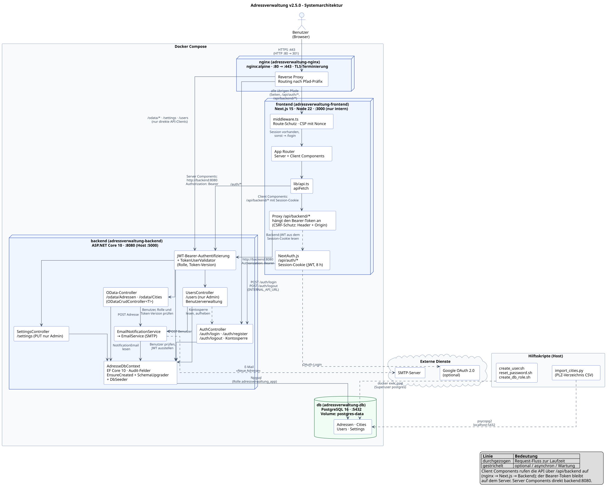
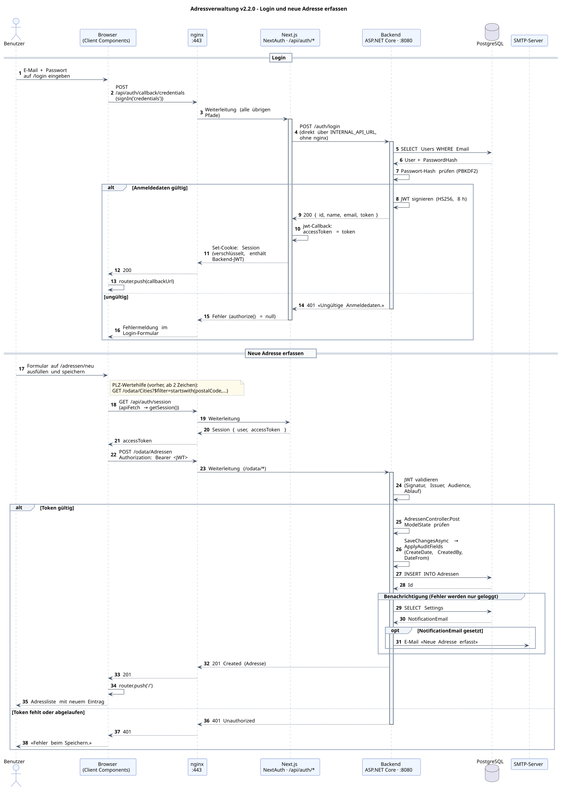

Die Adressverwaltung ist eine vollständige Webapplikation mit CRUD-Funktionen (Create, Read, Update, Delete). Angemeldete Benutzer erfassen, bearbeiten und löschen Personenadressen. Dazu kommen ein Städteverzeichnis mit allen Schweizer Postleitzahlen, eine PLZ-Wertehilfe im Adressformular, eine Einstellungsseite mit wählbarer Farbe der Oberfläche und eine E-Mail-Benachrichtigung bei neuen Adressen.
Es gibt zwei Rollen: User pflegt Adressen und Städte, Admin darf zusätzlich Benutzer verwalten und die Einstellungen ändern.
Eine Adresse besteht aus sechs Fachfeldern:
| Feld | Typ | Beschreibung | Beispiel |
|---|---|---|---|
vorname | string, max. 100 | Vorname der Person | Anna |
name | string, max. 100 | Nachname der Person | Meier |
strasse | string, max. 200 | Strassenname | Bahnhofstrasse |
strassennummer | string, max. 20 | Hausnummer, auch mit Zusatz | 12a |
plz | string, max. 10 | Postleitzahl | 8001 |
ort | string, max. 100 | Ortsname | Zürich |
Jeder Datensatz trägt zusätzlich Audit-Felder: wann und von wem er erstellt und zuletzt geändert wurde, sowie einen Gültigkeitszeitraum (dateFrom, dateTo). Diese Felder setzt das Backend selbst; das Frontend sendet sie nie.
Das Tutorial richtet sich an Lernende im 2. Lehrjahr Informatiker EFZ. Am Ende kannst du:
| Technologie | Version | Rolle | Warum? |
|---|---|---|---|
| Next.js | 15 (App Router) | Frontend-Framework | Server- und Client-Komponenten, eingebautes Routing |
| React | 19 | UI-Bibliothek | Komponenten und Hooks für den Zustand |
| TypeScript | 5 | Typsicherheit | Fehler beim Kompilieren statt zur Laufzeit |
| NextAuth.js | 4 | Sitzung im Frontend | Credentials-Provider, verschlüsseltes Session-Cookie |
| Tailwind CSS | 4 | Styling | Utility-Klassen direkt im Markup |
| ASP.NET Core | 10 | Backend-Framework | Performant, plattformübergreifend, OData-Unterstützung |
| OData | 9 (Microsoft.AspNetCore.OData) | Abfragesprache der API | Filter, Sortierung und Auswahl ohne eigene Endpunkte |
| EF Core + Npgsql | 10 | ORM | LINQ statt SQL, Modell als C#-Klassen |
| JWT | RFC 7519 | API-Authentifizierung | Zustandslos, kein Session-Speicher im Backend |
| PostgreSQL | 16 | Datenbank | Open Source, zuverlässig |
| nginx | aktuell | Reverse Proxy | HTTPS, ein Eingang für Frontend und Backend |
| Docker Compose | v2 | Container-Verbund | Alle Dienste mit einem Befehl starten |
| xUnit + Testcontainers | 2.9 / 4 | Backend-Tests | Tests gegen eine echte PostgreSQL-Datenbank |
Die Applikation besteht aus vier Containern. Der Browser spricht ausschliesslich mit nginx unter https://localhost. nginx beendet die TLS-Verbindung und verteilt die Anfragen nach ihrem Pfad:
| Pfad | Ziel | Inhalt |
|---|---|---|
/odata/* | Backend | OData-API für Adressen und Städte |
/auth/* | Backend | Login, Registrierung und Abmeldung |
/settings | Backend | Einstellungen lesen und speichern |
/users | Backend | Benutzerverwaltung |
| alles andere | Next.js | Seiten, /api/auth/* (NextAuth) und /api/backend/* (Proxy zum Backend) |
Der Browser ruft die API nie direkt auf. Seine Aufrufe gehen an /api/backend/…, also an Next.js. Dieser Proxy hängt das Token an und reicht die Anfrage an das Backend weiter (Kapitel 5.6). Die Pfade /odata, /auth und /settings sind für Werkzeuge wie curl oder Postman da, die ihr eigenes Token mitschicken.
Das vollständige Diagramm liegt in documentation/Systemarchitektur.svg:

Weil Frontend und Backend unter derselben Adresse erreichbar sind, braucht der Browser keine CORS-Freigaben, und es gibt nur ein Zertifikat. Backend und Datenbank sind von aussen gar nicht direkt erreichbar.
Die Einstellungsseite heisst /einstellungen, weil /settings an das Backend geht. Die Login-Seite heisst /login, weil /auth dem Backend und /api/auth NextAuth gehört.
https://localhost; nginx verteilt nach Pfad./api/backend von Next.js..env-Datei stehen und nicht im Repository.| Werkzeug | Version | Wozu? | Pflicht? |
|---|---|---|---|
| Docker mit Compose | aktuell | Startet alle vier Container | ja |
| Git | 2.x | Projekt klonen, Versionskontrolle | ja |
| mkcert | 1.4 | Lokales TLS-Zertifikat, dem der Browser vertraut | ja |
| .NET SDK | 10 | Backend lokal starten, Tests ausführen | für Backend-Arbeit |
| Node.js | 22 LTS | Frontend lokal starten, Lint | für Frontend-Arbeit |
Python 3 mit psycopg2-binary | 3.10+ | PLZ-Verzeichnis importieren | für den Import |
| VS Code | aktuell | Editor | empfohlen |
ms-dotnettools.csdevkit — C# Dev Kit (Sprachunterstützung, Tests)esbenp.prettier-vscode — Formatierung (2 Leerzeichen, einfache Anführungszeichen, Strichpunkte)dbaeumer.vscode-eslint — ESLint für TypeScriptms-azuretools.vscode-docker — Docker-Integrationhumao.rest-client — HTTP-Anfragen aus VS Code sendengit clone git@github.com:erich3019/adressverwaltung.git
cd adressverwaltungadressverwaltung/
├── backend/
│ ├── Adressverwaltung.sln
│ ├── AdressverwaltungApi/ ← API (Controller, Modelle, Dienste)
│ └── AdressverwaltungApi.Tests/ ← Integrationstests
├── frontend/ ← Next.js (app/, components/, lib/, types/)
├── nginx/
│ ├── nginx.conf ← Reverse Proxy
│ └── ssl/ ← Zertifikat (nicht in Git)
├── db/init/ ← Legt beim ersten Start die Datenbankrolle des Backends an
├── scripts/ ← create_user.sh, reset_password.sh, create_db_role.sh, import_cities.py
├── migration/ ← PLZ-Verzeichnis als CSV
├── documentation/ ← Diagramme, Berichte, dieses Tutorial
├── .env.example ← Vorlage für die Geheimnisse
└── docker-compose.yml ← Startet alle vier DienstePasswörter und Schlüssel gehören nicht in den Quellcode und nicht in Git. Sie stehen in der Datei .env im Projektstamm. Diese Datei ist git-ignoriert; im Repository liegt nur die Vorlage .env.example.
# Adressverwaltung – sicherheitsrelevante Variablen für docker-compose.yml
# Kopieren nach .env und die Platzhalter ersetzen. Die Datei .env gehört nicht in Git.
# PostgreSQL (gilt nur beim ersten Start mit leerem Volume; danach per ALTER USER ändern)
# z.B. openssl rand -hex 24
POSTGRES_PASSWORD=ERSETZEN
# Passwort der Datenbankrolle "adressverwaltung_app", mit der sich das Backend verbindet.
# Nur Buchstaben und Ziffern verwenden (der Wert steht in einem Connection-String).
# Neue Datenbank: wird beim ersten Start gesetzt. Bestehende Datenbank oder neues
# Passwort: ./scripts/create_db_role.sh
# z.B. openssl rand -hex 24
APP_DB_PASSWORD=ERSETZEN
# Signaturschlüssel der Backend-JWTs (mindestens 32 Zeichen)
# z.B. openssl rand -base64 48
JWT_KEY=ERSETZEN
# Verschlüsselung der NextAuth-Session
# z.B. openssl rand -base64 48
NEXTAUTH_SECRET=ERSETZEN
# Passwort des Admin-Benutzers beim ersten Start mit leerer Datenbank.
# Leer = das Backend erzeugt ein Zufallspasswort und schreibt es ins Log.
SEED_ADMIN_PASSWORD=
# SMTP-Zugangsdaten für E-Mail-Benachrichtigungen (optional)
SMTP_USERNAME=
SMTP_PASSWORD=
# Google OAuth (optional – leer lassen, um Google-Login zu deaktivieren)
GOOGLE_CLIENT_ID=
GOOGLE_CLIENT_SECRET=cp .env.example .env
openssl rand -hex 24 # je ein Wert für POSTGRES_PASSWORD und APP_DB_PASSWORD
openssl rand -base64 48 # je ein Wert für JWT_KEY und NEXTAUTH_SECRET| Variable | Verwendet für | Pflicht |
|---|---|---|
POSTGRES_PASSWORD | Passwort des Superusers postgres (Verwaltung, Hilfsskripte, PLZ-Import) | ja |
APP_DB_PASSWORD | Passwort der Rolle adressverwaltung_app, mit der sich das Backend verbindet; nur Buchstaben und Ziffern | ja |
JWT_KEY | Signaturschlüssel der Backend-Tokens, mindestens 32 Zeichen | ja |
NEXTAUTH_SECRET | Verschlüsselung des Session-Cookies | ja |
SEED_ADMIN_PASSWORD | Passwort des ersten Admin-Benutzers | nein |
SMTP_USERNAME, SMTP_PASSWORD | Zugangsdaten für den Mailversand | nein |
GOOGLE_CLIENT_ID, GOOGLE_CLIENT_SECRET | Google-Login | nein |
Docker Compose bricht mit einer Meldung ab, wenn einer der vier Pflichtwerte fehlt. Das Backend startet ausserdem nicht, wenn JWT_KEY kürzer als 32 Zeichen ist. Der Wert ERSETZEN aus der Vorlage reicht also nicht.
Das Backend arbeitet nicht als Superuser postgres, sondern mit der Rolle adressverwaltung_app. Sie besitzt nur die Datenbank der Anwendung. Angelegt wird sie beim ersten Start mit leerem Volume (db/init/10-app-rolle.sh). Für eine bestehende Datenbank oder nach einem neuen APP_DB_PASSWORD genügt einmal ./scripts/create_db_role.sh.
nginx braucht ein Zertifikat. Ein selbstsigniertes Zertifikat zeigt der Browser als «nicht sicher» an. mkcert legt eine lokale Zertifizierungsstelle an, trägt sie bei Betriebssystem und Browser als vertrauenswürdig ein und stellt damit ein Zertifikat für localhost aus:
mkcert -install # einmalig pro Rechner
mkdir -p nginx/ssl
mkcert -cert-file nginx/ssl/cert.pem -key-file nginx/ssl/key.pem localhost 127.0.0.1 ::1# Alle vier Container bauen und im Hintergrund starten
docker compose up --build -d
# Status prüfen
docker compose ps
# Logs des Backends verfolgen
docker compose logs -f backend| Dienst | Adresse | Hinweis |
|---|---|---|
| Applikation | https://localhost | Port 80 leitet auf 443 um |
| Backend direkt | http://localhost:5000 | nur vom eigenen Rechner; alle Endpunkte ausser Login brauchen ein Token |
| PostgreSQL | localhost:5432 | nur vom eigenen Rechner; Datenbank adressverwaltung |
| Swagger | http://localhost:5000/swagger | nur bei lokalem Start in der Umgebung Development |
Ist die Tabelle Users leer, legt das Backend beim Start den Benutzer admin@example.com mit der Rolle Admin an. Das Passwort stammt aus SEED_ADMIN_PASSWORD. Ist der Wert leer, erzeugt das Backend ein Zufallspasswort und schreibt es einmalig ins Log:
docker compose logs backend | grep "Admin-Benutzer"Trage vor dem ersten Start einen festen Wert bei SEED_ADMIN_PASSWORD ein. Dann haben alle dasselbe, bekannte Passwort.
Eine frische Datenbank enthält keine Städte; die PLZ-Wertehilfe im Adressformular bleibt leer, bis das Verzeichnis importiert ist (Details in Anhang A). Weitere Benutzer legt ein Skript direkt in der Datenbank an:
# PLZ-Verzeichnis importieren (4073 Einträge)
pip install psycopg2-binary
set -a; . ./.env; set +a
CSV_PATH=migration/AMTOVZ_CSV_LV95.csv python3 scripts/import_cities.py
# Benutzer anlegen (viertes Argument: Rolle, ohne Angabe User)
./scripts/create_user.sh anna@example.com "Anna Meier" "Ein-Sicheres-Passwort-1!"
./scripts/create_user.sh beat@example.com "Beat Keller" "Ein-Sicheres-Passwort-2!" Admin
# Admin-Passwort neu setzen
./scripts/reset_password.sh.env (nicht in Git), die Vorlage in .env.example; vier Werte sind Pflicht.mkcert sorgt dafür, dass der Browser https://localhost als sicher anzeigt.docker compose up --build -d startet alles; das erste Admin-Passwort steht im Backend-Log.EnsureCreated verwendet und wie neue Spalten in eine bestehende Datenbank gelangen.| Klasse | Tabelle | Zweck |
|---|---|---|
Adresse | Adressen | Personenadresse |
City | Cities | PLZ und Ortsname für die Wertehilfe |
User | Users | Benutzerkonto mit Passwort-Hash, Rolle und Token-Version |
Settings | Settings | Einstellungen (eine einzige Zeile): Benachrichtigungs-E-Mail und Akzentfarbe |
Pflichtfelder und Höchstlängen stehen als DataAnnotations direkt an den Eigenschaften. Sie gelten doppelt: als Spaltendefinition in der Datenbank und als Validierung eingehender Daten.
public class Adresse : AuditableEntity
{
public int Id { get; set; }
[Required]
[MaxLength(100)]
public string Vorname { get; set; } = string.Empty;
[Required]
[MaxLength(100)]
public string Name { get; set; } = string.Empty;
[Required]
[MaxLength(200)]
public string Strasse { get; set; } = string.Empty;
[Required]
[MaxLength(20)]
public string Strassennummer { get; set; } = string.Empty;
[Required]
[MaxLength(10)]
public string Plz { get; set; } = string.Empty;
[Required]
[MaxLength(100)]
public string Ort { get; set; } = string.Empty;
}public class City : AuditableEntity
{
public int Id { get; set; }
/// <summary>Postleitzahl (z.B. "8001")</summary>
[Required]
[MaxLength(10)]
public string PostalCode { get; set; } = string.Empty;
/// <summary>Ortsname (z.B. "Zürich")</summary>
[Required]
[MaxLength(100)]
public string CityName { get; set; } = string.Empty;
}public class User : AuditableEntity
{
public int Id { get; set; }
[Required]
[MaxLength(256)]
[EmailAddress]
public string Email { get; set; } = string.Empty;
/// <summary>
/// Passwort-Hash (generiert via ASP.NET Core PasswordHasher).
/// Wird niemals im Klartext gespeichert oder zurückgegeben.
/// </summary>
[Required]
public string PasswordHash { get; set; } = string.Empty;
/// <summary>Anzeigename des Benutzers (z.B. "Anna Meier")</summary>
[Required]
[MaxLength(100)]
public string DisplayName { get; set; } = string.Empty;
/// <summary>Rolle des Benutzers, siehe <see cref="Roles"/>.</summary>
[Required]
[MaxLength(20)]
public string Role { get; set; } = Roles.User;
/// <summary>
/// Wird bei der Abmeldung erhöht. Ein Token gilt nur, solange seine Version
/// mit diesem Wert übereinstimmt – so lassen sich ausgestellte Tokens widerrufen.
/// </summary>
public int TokenVersion { get; set; }
/// <summary>
/// Sperrkennzeichen: Ende der Anmeldesperre nach zu vielen Fehlversuchen (UTC),
/// sonst null. Ein Zeitpunkt in der Vergangenheit bedeutet «nicht mehr gesperrt».
/// Ein Administrator kann das Kennzeichen vorzeitig löschen.
/// </summary>
public DateTime? LockedUntil { get; set; }
/// <summary>true, solange die Anmeldesperre läuft.</summary>
public bool IsLocked(DateTime utcNow) => LockedUntil > utcNow;
}Role legt fest, was der Benutzer darf. TokenVersion ist ein Zähler, mit dem sich ausgestellte Tokens widerrufen lassen (Kapitel 5.5). LockedUntil ist das Sperrkennzeichen: Nach drei fehlerhaften Anmeldungen steht dort das Ende der Sperre, sonst ist das Feld leer (Kapitel 4.4). Die erlaubten Rollen stehen als Konstanten an einer Stelle:
public static class Roles
{
public const string Admin = "Admin";
public const string User = "User";
public static bool IsValid(string? role) => role is Admin or User;
}Gespeichert wird nur ein Hash (PBKDF2 mit Salt, erzeugt vom PasswordHasher von ASP.NET Core). Der Klartext wird nie gespeichert, und kein API-Endpunkt gibt den Hash zurück.
Alle vier Entitäten erben von AuditableEntity. So stehen die Audit-Felder nur an einer Stelle (DRY):
public abstract class AuditableEntity
{
// ─────────────────────────────────────────────────────────────────────────
// Audit: Erstellungsinformationen
// ─────────────────────────────────────────────────────────────────────────
/// <summary>Zeitstempel der Erstellung (UTC), automatisch gesetzt.</summary>
public DateTime CreateDate { get; set; }
/// <summary>Benutzername, der den Datensatz erstellt hat. Automatisch aus dem HTTP-Kontext ermittelt.</summary>
public string CreatedBy { get; set; } = string.Empty;
// ─────────────────────────────────────────────────────────────────────────
// Audit: Änderungsinformationen
// ─────────────────────────────────────────────────────────────────────────
/// <summary>Zeitstempel der letzten Änderung (UTC), wird bei jedem UPDATE gesetzt.</summary>
public DateTime? ChangeDate { get; set; }
/// <summary>Benutzername, der zuletzt geändert hat. Wird bei jedem UPDATE gesetzt.</summary>
public string? ChangedBy { get; set; }
// ─────────────────────────────────────────────────────────────────────────
// Gültigkeitszeitraum
// ─────────────────────────────────────────────────────────────────────────
/// <summary>
/// Gültig ab (inklusive). Standardmässig wird das heutige Datum gesetzt,
/// falls beim Erstellen kein Wert übergeben wird.
/// </summary>
public DateOnly DateFrom { get; set; }
/// <summary>
/// Gültig bis (inklusive). null bedeutet "unbegrenzt gültig".
/// </summary>
public DateOnly? DateTo { get; set; }
}Befüllt werden sie im AdresseDbContext, unmittelbar vor jedem Speichern:
private void ApplyAuditFields()
{
// DateTime.UtcNow hat Kind=UTC, aber die Spalte ist 'timestamp without time zone'.
// Npgsql 6+ lehnt Kind=UTC für diesen Typ ab → Kind=Unspecified setzen.
var now = DateTime.SpecifyKind(DateTime.UtcNow, DateTimeKind.Unspecified);
// Benutzername ermitteln:
// 1. Aus dem JWT-Claim (Name) des angemeldeten Benutzers
// 2. Fallback: "system" (z.B. beim Seeding oder Hintergrundprozessen)
// Frei setzbare Request-Header werden bewusst nicht berücksichtigt,
// weil sich sonst die Audit-Felder fälschen liessen.
var claimUser = _httpContextAccessor?.HttpContext?.User?.Identity?.Name;
var currentUser = !string.IsNullOrWhiteSpace(claimUser) ? claimUser : "system";
foreach (var entry in ChangeTracker.Entries<AuditableEntity>())
{
switch (entry.State)
{
case EntityState.Added:
entry.Entity.CreateDate = now;
entry.Entity.CreatedBy = currentUser;
// Vom Client mitgeschickte Änderungsangaben verwerfen
entry.Entity.ChangeDate = null;
entry.Entity.ChangedBy = null;
// DateFrom auf heute setzen, falls nicht explizit übergeben
if (entry.Entity.DateFrom == default)
entry.Entity.DateFrom = DateOnly.FromDateTime(now);
break;
case EntityState.Modified:
entry.Entity.ChangeDate = now;
entry.Entity.ChangedBy = currentUser;
// CreateDate und CreatedBy niemals überschreiben!
entry.Property(e => e.CreateDate).IsModified = false;
entry.Property(e => e.CreatedBy).IsModified = false;
break;
}
}
}// Synchrone Variante (z.B. beim Seeding in Program.cs)
public override int SaveChanges()
{
ApplyAuditFields();
return base.SaveChanges();
}
// Asynchrone Variante (Standard-Pfad in allen Controllern)
public override Task<int> SaveChangesAsync(CancellationToken cancellationToken = default)
{
ApplyAuditFields();
return base.SaveChangesAsync(cancellationToken);
}EF Core kennt eine synchrone und eine asynchrone Variante. Würde nur eine überschrieben, blieben die Audit-Felder je nach Aufruf leer – ein Fehler, der schwer zu finden ist.
Massgebend ist allein der Name aus dem geprüften JWT. Ein frei setzbarer Request-Header wird bewusst nicht gelesen, sonst liessen sich CreatedBy und ChangedBy fälschen. Controller setzen die Audit-Felder nie selbst.
Die Zeitstempel liegen in Spalten vom Typ timestamp without time zone. Npgsql lehnt dafür Werte mit Kind=Utc ab, deshalb setzt ApplyAuditFields die Art ausdrücklich auf Unspecified.
Der Kontext kennt die vier Tabellen und konfiguriert, was sich nicht über DataAnnotations ausdrücken lässt: die Audit-Spalten, die Tabellennamen, zwei Indizes und die Standardwerte für Role, TokenVersion und AccentColor.
protected override void OnModelCreating(ModelBuilder modelBuilder)
{
base.OnModelCreating(modelBuilder);
// ── Gemeinsame Audit-Spalten für alle AuditableEntity-Typen ─────────
// EF Core vererbt die Felder automatisch durch Vererbung.
// Wir konfigurieren sie explizit für maximale Kontrolle.
foreach (var entityType in modelBuilder.Model.GetEntityTypes())
{
if (typeof(AuditableEntity).IsAssignableFrom(entityType.ClrType))
{
modelBuilder.Entity(entityType.ClrType, b =>
{
b.Property<DateTime>("CreateDate")
.IsRequired()
.HasColumnType("timestamp without time zone");
b.Property<string>("CreatedBy")
.IsRequired()
.HasMaxLength(100)
.HasColumnType("character varying(100)");
b.Property<DateTime?>("ChangeDate")
.HasColumnType("timestamp without time zone");
b.Property<string?>("ChangedBy")
.HasMaxLength(100)
.HasColumnType("character varying(100)");
b.Property<DateOnly>("DateFrom")
.IsRequired()
.HasColumnType("date");
b.Property<DateOnly?>("DateTo")
.HasColumnType("date");
});
}
}
// B-12: Pflichtfelder und Längen stehen als DataAnnotations an den Modellen (B-07).
// Hier folgt nur, was sich dort nicht ausdrücken lässt: Tabellennamen und Indizes.
modelBuilder.Entity<Adresse>().ToTable("Adressen");
modelBuilder.Entity<City>(entity =>
{
entity.ToTable("Cities");
// Index für schnelle PLZ-Suche
entity.HasIndex(c => c.PostalCode);
});
modelBuilder.Entity<User>(entity =>
{
entity.ToTable("Users");
// E-Mail muss eindeutig sein
entity.HasIndex(u => u.Email).IsUnique();
// Standardwerte in der Datenbank, damit auch Skripte mit eigenem SQL
// (create_user.sh) gültige Zeilen anlegen
entity.Property(u => u.Role).HasDefaultValue(Roles.User);
entity.Property(u => u.TokenVersion).HasDefaultValue(0);
// Sperrkennzeichen: wie die Audit-Zeitstempel ohne Zeitzone gespeichert (UTC)
entity.Property(u => u.LockedUntil).HasColumnType("timestamp without time zone");
});
modelBuilder.Entity<Settings>(entity =>
{
entity.ToTable("Settings");
entity.Property(s => s.AccentColor).HasDefaultValue(AccentColors.Default);
});
}Skripte wie create_user.sh schreiben mit eigenem SQL in die Tabelle und laufen nicht durch EF Core. Damit auch sie gültige Zeilen anlegen, kennt die Datenbank selbst die Standardwerte User und 0.
Ohne Benutzer kann sich niemand anmelden. DbSeeder legt deshalb beim Start einen Admin-Benutzer an, falls die Tabelle leer ist. Ein fest einprogrammiertes Standardpasswort gibt es nicht:
public static class DbSeeder
{
/// <summary>
/// Legt den Admin-Benutzer an, falls noch kein Benutzer vorhanden ist.
/// Zugangsdaten werden aus der Konfiguration gelesen (Seed-Abschnitt).
/// Ohne Seed:AdminPassword wird ein zufälliges Passwort erzeugt und einmalig geloggt –
/// es gibt bewusst kein fest einprogrammiertes Standardpasswort.
/// </summary>
public static void Seed(
AdresseDbContext db,
IPasswordHasher<User> hasher,
IConfiguration config,
ILogger logger)
{
// Nur seeden, wenn die Tabelle leer ist
if (db.Users.Any()) return;
var email = config["Seed:AdminEmail"] ?? "admin@example.com";
var password = config["Seed:AdminPassword"];
if (string.IsNullOrWhiteSpace(password))
{
password = Convert.ToBase64String(RandomNumberGenerator.GetBytes(18));
logger.LogWarning(
"Seed:AdminPassword ist nicht gesetzt. Admin-Benutzer {Email} wurde mit dem zufälligen Passwort {Password} angelegt. Bitte nach dem ersten Login ändern.",
email, password);
}
var admin = new User
{
Email = email,
DisplayName = "Admin",
Role = Roles.Admin,
};
admin.PasswordHash = hasher.HashPassword(admin, password);
db.Users.Add(admin);
db.SaveChanges();
}
}Program.cs konfiguriert die Anwendung. Das Anlegen von Startdaten ist eine andere Aufgabe und steht deshalb in einer eigenen Klasse.
// === DATENBANKSCHEMA UND SEED-DATEN BEIM START ===
using (var scope = app.Services.CreateScope())
{
var db = scope.ServiceProvider.GetRequiredService<AdresseDbContext>();
var hasher = scope.ServiceProvider.GetRequiredService<IPasswordHasher<User>>();
var config = scope.ServiceProvider.GetRequiredService<IConfiguration>();
// EnsureCreated erstellt alle Tabellen direkt aus dem EF-Modell.
// Zuverlässiger als Migrate() in Docker-Umgebungen, da keine
// Migrations-History-Konflikte entstehen können.
db.Database.EnsureCreated();
// Spalten nachziehen, die einer bestehenden Datenbank noch fehlen
SchemaUpgrader.Apply(db);
// B-01: Seed-Logik ausgelagert in DbSeeder (SRP)
DbSeeder.Seed(db, hasher, config, app.Logger);
}| Methode | Was sie tut | Wann einsetzen? |
|---|---|---|
EnsureCreated() | Erstellt alle Tabellen aus dem Modell, wenn die Datenbank noch nicht existiert. Tut nichts, wenn sie schon existiert. | Lernprojekte und Wegwerf-Datenbanken |
| Migrations | Schrittweise Skripte für jede Schemaänderung; bestehende Daten bleiben erhalten. | Produktive Systeme |
Weil EnsureCreated eine bestehende Datenbank nicht anfasst, zieht SchemaUpgrader gleich danach fehlende Spalten nach. Jede Anweisung ist so geschrieben, dass sie beliebig oft laufen kann:
public static class SchemaUpgrader
{
public static void Apply(AdresseDbContext db)
{
// Rollen: Benutzer, die es vor der Einführung schon gab, hatten vollen Zugriff
// und behalten ihn als "Admin". Danach gilt für neue Zeilen der Standard "User".
db.Database.ExecuteSqlRaw("""
DO $$
BEGIN
IF NOT EXISTS (SELECT 1 FROM information_schema.columns
WHERE table_name = 'Users' AND column_name = 'Role') THEN
ALTER TABLE "Users" ADD COLUMN "Role" character varying(20) NOT NULL DEFAULT 'Admin';
ALTER TABLE "Users" ALTER COLUMN "Role" SET DEFAULT 'User';
END IF;
END $$;
""");
// Token-Widerruf: Zähler, der bei der Abmeldung erhöht wird
db.Database.ExecuteSqlRaw("""
ALTER TABLE "Users" ADD COLUMN IF NOT EXISTS "TokenVersion" integer NOT NULL DEFAULT 0;
""");
// Sperrkennzeichen: Ende der Anmeldesperre nach Fehlversuchen (leer = nicht gesperrt)
db.Database.ExecuteSqlRaw("""
ALTER TABLE "Users" ADD COLUMN IF NOT EXISTS "LockedUntil" timestamp without time zone NULL;
""");
// Akzentfarbe der Oberfläche
db.Database.ExecuteSqlRaw("""
ALTER TABLE "Settings" ADD COLUMN IF NOT EXISTS "AccentColor" character varying(20) NOT NULL DEFAULT 'blue';
""");
}
}Benutzer, die es vor der Einführung der Rollen schon gab, hatten vollen Zugriff und werden deshalb Admin. Erst danach gilt für neue Zeilen der Standard User.
Fügst du einem Modell ein Feld hinzu, ändert sich eine bereits bestehende Datenbank nicht. Entweder ergänzt du die Spalte im SchemaUpgrader, oder du löschst das Volume mit docker compose down -v und startest neu – dann sind die Daten weg. Die Dateien im Ordner Migrations/ werden zur Laufzeit nicht angewendet.
AuditableEntity.ApplyAuditFields setzt Zeitstempel und Benutzer vor jedem Speichern; der Benutzer kommt aus dem Token.DbSeeder legt den ersten Benutzer als Admin an, ohne festes Standardpasswort.EnsureCreated erstellt das Schema nur einmal; neue Spalten zieht SchemaUpgrader nach.AdressverwaltungApi/
├── Controllers/
│ ├── ODataCrudController.cs ← Generische Basisklasse (GET/POST/PATCH/DELETE)
│ ├── AdressenController.cs ← Adressen + Benachrichtigung
│ ├── CitiesController.cs ← Städte
│ ├── AuthController.cs ← Login, Registrierung, Abmeldung
│ ├── SettingsController.cs ← Einstellungen
│ └── UsersController.cs ← Benutzerverwaltung
├── Data/
│ └── AdresseDbContext.cs ← EF Core DbContext + Audit-Felder
├── Dtos/ ← Request- und Response-Typen (Auth, Settings, Users)
├── Models/ ← Adresse, City, User, Roles, Settings, AccentColors, AuditableEntity
├── Options/ ← JwtOptions, SmtpOptions (typisierte Konfiguration)
├── Services/
│ ├── ITokenService.cs / JwtTokenService.cs
│ ├── ILoginThrottle.cs / MemoryLoginThrottle.cs ← Kontosperre
│ ├── INotificationService.cs / EmailNotificationService.cs
│ └── IEmailService.cs / EmailService.cs
├── DbSeeder.cs ← Erster Admin-Benutzer
├── SchemaUpgrader.cs ← Fehlende Spalten nachziehen
├── TokenUserValidator.cs ← Token mit der Datenbank abgleichen
├── ODataErrorDetailFilter.cs ← Fehlerantworten ohne Stacktrace
├── Program.cs ← Konfiguration und Middleware
└── appsettings.json ← Konfiguration ohne GeheimnisseOData (Open Data Protocol) legt fest, wie Abfragen als URL-Parameter formuliert werden. Das Backend braucht keine eigenen Endpunkte für «Adressen aus Zürich» oder «die ersten zehn, sortiert nach Name» – OData übersetzt die Parameter in SQL.
| Option | Funktion | Beispiel |
|---|---|---|
$filter | Zeilen filtern | $filter=ort eq 'Zürich' |
$select | Nur bestimmte Felder | $select=vorname,name,plz |
$orderby | Sortieren | $orderby=name asc |
$top | Höchstzahl (maximal 100) | $top=10 |
$skip | Überspringen | $skip=20 |
$count | Gesamtzahl mitliefern | $count=true |
// === ODATA: EDM-Modell definieren ===
var modelBuilder = new ODataConventionModelBuilder();
modelBuilder.EnableLowerCamelCase(); // camelCase für alle Properties
modelBuilder.EntitySet<Adresse>("Adressen");
modelBuilder.EntitySet<City>("Cities");
// === CONTROLLERS + ODATA aktivieren ===
builder.Services.AddControllers(options => options.Filters.Add<ODataErrorDetailFilter>())
.AddJsonOptions(options =>
{
// camelCase für REST-Antworten (auth, settings)
options.JsonSerializerOptions.PropertyNamingPolicy =
System.Text.Json.JsonNamingPolicy.CamelCase;
})
.AddOData(options => options
.Select()
.Filter()
.OrderBy()
.SetMaxTop(ODataCrudController<Adresse>.MaxPageSize)
.Count()
.Expand()
.AddRouteComponents("odata", modelBuilder.GetEdmModel())
);Wegen EnableLowerCamelCase() heissen die Eigenschaften in Antworten und in Abfragen vorname, postalCode usw. – nicht Vorname. Eine Abfrage mit $filter=Ort eq ... liefert einen Fehler.
# Adressen (höchstens 100 pro Antwort)
GET https://localhost/odata/Adressen
# Seite 2 mit je 25 Zeilen, dazu die Gesamtzahl
GET https://localhost/odata/Adressen?$orderby=name&$top=25&$skip=25&$count=true
# Adressen aus Zürich, sortiert nach Name
GET https://localhost/odata/Adressen?$filter=ort eq 'Zürich'&$orderby=name
# PLZ-Suche: Städte, deren PLZ mit 80 beginnt (höchstens 10)
GET https://localhost/odata/Cities?$filter=startswith(postalCode,'80')&$top=10&$orderby=postalCode
# Nur drei Felder
GET https://localhost/odata/Adressen?$select=vorname,name,ort
# Eine einzelne Adresse
GET https://localhost/odata/Adressen(1)Listen kommen in einem Umschlag zurück: {"@odata.context":"…","value":[…]}. Das Frontend liest deshalb data.value. Ein einzelner Datensatz (Adressen(1)) kommt ohne value.
Eine Liste enthält nie mehr als 100 Zeilen. Gibt es mehr, steht in der Antwort zusätzlich @odata.nextLink mit der Adresse der nächsten Seite. Mit $count=true liefert das Backend die Gesamtzahl als @odata.count mit – so blättert das Frontend (Kapitel 6.4).
Fehlerantworten von OData enthielten ursprünglich den Ausnahmetyp und einen Stacktrace. Der ODataErrorDetailFilter entfernt beides; die eigentliche Fehlermeldung bleibt.
AdressenController und CitiesController bräuchten denselben Code für GET, POST, PATCH und DELETE. Stattdessen implementiert eine generische Basisklasse die CRUD-Logik einmal (DRY):
[Authorize] // Alle abgeleiteten Controller (Adressen, Cities) erfordern gültigen JWT
public abstract class ODataCrudController<TEntity> : ODataController
where TEntity : class
{
/// <summary>Grösste Seite, die eine Listenabfrage liefert (entspricht SetMaxTop in Program.cs).</summary>
public const int MaxPageSize = 100;
protected readonly AdresseDbContext _context;
/// <summary>Das DbSet, auf dem dieser Controller operiert.</summary>
protected abstract DbSet<TEntity> Entities { get; }
/// <summary>Anzeigename der Entität für Fehlermeldungen (z.B. "Adresse", "Stadt").</summary>
protected abstract string EntityDisplayName { get; }
protected ODataCrudController(AdresseDbContext context)
{
_context = context;
}
// GET /odata/{EntitySet}
// Höchstens MaxPageSize Zeilen pro Antwort; für den Rest liefert OData "@odata.nextLink".
[EnableQuery(PageSize = MaxPageSize)]
public virtual IActionResult Get()
=> Ok(Entities.AsNoTracking());
// GET /odata/{EntitySet}(5)
[EnableQuery]
public virtual async Task<IActionResult> Get([FromRoute] int key)
{
var entity = await Entities.FindAsync(key);
if (entity is null)
return EntityNotFound(key);
return Ok(entity);
}
// POST /odata/{EntitySet}
public virtual async Task<IActionResult> Post([FromBody] TEntity entity)
{
if (!ModelState.IsValid)
return BadRequest(ModelState);
// Den Schlüssel vergibt die Datenbank. Ein mitgeschickter Wert wird verworfen,
// sonst liessen sich Ids vorbelegen, die später mit der Sequenz kollidieren.
var entry = _context.Entry(entity);
foreach (var name in KeyPropertyNames)
entry.Property(name).CurrentValue = entry.Property(name).Metadata.Sentinel;
Entities.Add(entity);
await _context.SaveChangesAsync();
await OnCreatedAsync(entity);
return Created(entity);
}
// PATCH /odata/{EntitySet}(5)
public virtual async Task<IActionResult> Patch(
[FromRoute] int key,
[FromBody] Delta<TEntity> delta)
{
if (!ModelState.IsValid)
return BadRequest(ModelState);
var entity = await Entities.FindAsync(key);
if (entity is null)
return EntityNotFound(key);
// Der Schlüssel ist nicht änderbar (EF Core würde sonst mit einer Ausnahme abbrechen)
foreach (var name in KeyPropertyNames)
delta.UpdatableProperties.Remove(name);
delta.Patch(entity);
if (!TryValidateModel(entity))
return BadRequest(ModelState);
await _context.SaveChangesAsync();
return Updated(entity);
}
// DELETE /odata/{EntitySet}(5)
public virtual async Task<IActionResult> Delete([FromRoute] int key)
{
var entity = await Entities.FindAsync(key);
if (entity is null)
return EntityNotFound(key);
Entities.Remove(entity);
await _context.SaveChangesAsync();
return NoContent();
}
/// <summary>
/// Erweiterungspunkt: wird nach dem Speichern einer neuen Entität aufgerufen (B-11).
/// Unterklassen hängen hier Folgeaktionen an, statt Post zu kopieren.
/// </summary>
protected virtual Task OnCreatedAsync(TEntity entity) => Task.CompletedTask;
private IEnumerable<string> KeyPropertyNames
=> _context.Model.FindEntityType(typeof(TEntity))!.FindPrimaryKey()!.Properties.Select(p => p.Name);
private IActionResult EntityNotFound(int key)
=> NotFound($"{EntityDisplayName} mit Id {key} wurde nicht gefunden.");
}| Stelle | Wozu? |
|---|---|
[EnableQuery(PageSize = MaxPageSize)] | Begrenzt jede Liste auf 100 Zeilen, auch wenn die Abfrage kein $top enthält. |
Post: Schlüssel zurücksetzen | Die Id vergibt die Datenbank. Eine mitgeschickte id wird verworfen, sonst liessen sich Ids vorbelegen, die später mit der Sequenz kollidieren. |
Patch: Schlüssel aus dem Delta entfernen | Eine id im Body wird ignoriert; vorher endete eine solche Anfrage mit dem Status 500. |
Ein konkreter Controller liefert nur noch das DbSet und einen Anzeigenamen:
public class CitiesController : ODataCrudController<City>
{
protected override DbSet<City> Entities => _context.Cities;
protected override string EntityDisplayName => "Stadt";
public CitiesController(AdresseDbContext context) : base(context) { }
}Der AdressenController braucht zusätzlich die Benachrichtigung. Er kopiert dafür nicht die Post-Methode, sondern hängt sich an den Erweiterungspunkt OnCreatedAsync:
public class AdressenController : ODataCrudController<Adresse>
{
protected override DbSet<Adresse> Entities => _context.Adressen;
protected override string EntityDisplayName => "Adresse";
private readonly INotificationService _notificationService;
public AdressenController(
AdresseDbContext context,
INotificationService notificationService) : base(context)
{
_notificationService = notificationService;
}
protected override Task OnCreatedAsync(Adresse adresse)
=> _notificationService.NotifyNewAdresseAsync(adresse);
}Vier Schritte: Modell anlegen, DbSet im AdresseDbContext ergänzen, modelBuilder.EntitySet<T>("Name") in Program.cs eintragen und einen Controller schreiben, dessen Name zum EntitySet passt.
/// <summary>Request-Body für POST /auth/register</summary>
public record RegisterRequest(
[Required][EmailAddress][MaxLength(256)] string Email,
[Required][MinLength(8)][MaxLength(128)] string Password,
[Required][MaxLength(100)] string DisplayName,
/// <summary>"Admin" oder "User"; ohne Angabe "User".</summary>
[MaxLength(20)] string? Role = null
);
/// <summary>Request-Body für POST /auth/login</summary>
public record LoginRequest(
[Required][EmailAddress][MaxLength(256)] string Email,
[Required][MaxLength(128)] string Password
);
/// <summary>
/// Antwort-Body für erfolgreichen POST /auth/login.
/// Enthält den JWT Bearer-Token, den das Frontend bei jedem API-Aufruf
/// im Authorization-Header mitsendet.
/// </summary>
public record LoginResponse(
string Id,
string Name,
string Email,
string Role,
string Token
);// POST /auth/login
// Gibt { id, name, email, token } zurück – das Format, das NextAuth.js erwartet
[AllowAnonymous]
[HttpPost("login")]
public async Task<IActionResult> Login([FromBody] LoginRequest req)
{
if (!ModelState.IsValid)
{
return BadRequest(ModelState);
}
// Nach zu vielen Fehlversuchen ist die Adresse vorübergehend gesperrt –
// auch für das richtige Passwort und auch für unbekannte Adressen.
if (_throttle.IsBlocked(req.Email))
{
return TooManyRequests();
}
var user = await FindUserByEmailAsync(req.Email);
// Das Sperrkennzeichen des Benutzers gilt auch nach einem Neustart des Backends,
// bei dem der Zähler im Arbeitsspeicher verloren geht.
if (user is not null && user.IsLocked(DateTime.UtcNow))
{
return TooManyRequests();
}
// Passwort prüfen – bei ungültigem Benutzer trotzdem "prüfen"
// (verhindert Timing-Angriffe durch gleiche Ausführungszeit)
var result = _hasher.VerifyHashedPassword(
user ?? DummyUser,
user?.PasswordHash ?? DummyHash,
req.Password);
if (user is null || result == PasswordVerificationResult.Failed)
{
var lockedUntil = _throttle.RegisterFailure(req.Email);
// Dieser Fehlversuch hat die Sperre ausgelöst: beim Benutzer vermerken und melden.
// Für eine unbekannte Adresse gibt es keinen Benutzer und deshalb keine E-Mail.
if (lockedUntil is not null && user is not null)
{
await LockUserAsync(user, lockedUntil.Value);
}
// Bewusst generische Fehlermeldung
return Unauthorized(new { message = "Ungültige Anmeldedaten." });
}
_throttle.Reset(req.Email);
// Abgelaufenes Sperrkennzeichen aufräumen
if (user.LockedUntil is not null)
{
user.LockedUntil = null;
await _context.SaveChangesAsync();
}
return Ok(new LoginResponse(
Id: user.Id.ToString(),
Name: user.DisplayName,
Email: user.Email,
Role: user.Role,
Token: _tokenService.CreateToken(user)
));
}private Task<User?> FindUserByEmailAsync(string email)
{
var normalized = email.Trim().ToUpperInvariant();
return _context.Users.FirstOrDefaultAsync(u => u.Email.ToUpper() == normalized);
}Ein Angreifer misst die Antwortzeit. Antwortet die API bei unbekannter E-Mail schneller als bei falschem Passwort, verrät sie, welche Adressen registriert sind. Deshalb wird das Passwort immer geprüft – bei unbekannter E-Mail gegen einen festen, einmal berechneten Ersatz-Hash (DummyHash). Auch die Fehlermeldung ist in beiden Fällen dieselbe.
Vor der Passwortprüfung fragt der Controller den ILoginThrottle. Nach drei Fehlversuchen ist eine E-Mail-Adresse fünf Minuten gesperrt, und das Backend antwortet mit 429 – auch auf das richtige Passwort. Die fünf Minuten zählen ab dem dritten Fehlversuch. Gezählt wird pro Adresse, unabhängig davon, ob es dazu ein Konto gibt. Die Sperre verrät also nicht, welche Konten existieren. Das Login-Formular zeigt bei 429 eine eigene Meldung.
Gibt es zur Adresse einen Benutzer, hält der Controller die Sperre zusätzlich bei ihm fest: Der dritte Fehlversuch setzt das Sperrkennzeichen Users.LockedUntil auf das Ende der Sperre und meldet sie per E-Mail der Adresse aus den Einstellungen (Kapitel 4.6). Das Kennzeichen steht in der Datenbank und gilt deshalb auch nach einem Neustart des Backends. Ein Admin kann es in der Benutzerverwaltung vor Ablauf der fünf Minuten löschen («Entsperren»); nach Ablauf sperrt es nicht mehr und wird bei der nächsten erfolgreichen Anmeldung geleert. Für eine unbekannte Adresse gibt es weder Kennzeichen noch E-Mail – sie ist nur über den Zähler im Arbeitsspeicher gesperrt.
public sealed class MemoryLoginThrottle : ILoginThrottle, IDisposable
{
public const int MaxFailures = 3;
public static readonly TimeSpan LockDuration = TimeSpan.FromMinutes(5);
// Fehlversuche zählen zusammen, solange sie innerhalb dieses Fensters liegen
public static readonly TimeSpan Window = LockDuration;
// Obergrenze, damit sich der Speicher nicht mit erfundenen Adressen füllen lässt
private const int MaxTrackedEmails = 10_000;
private readonly MemoryCache _cache = new(new MemoryCacheOptions { SizeLimit = MaxTrackedEmails });
private sealed class Counter
{
public int Failures;
public DateTime? BlockedUntil;
}
public bool IsBlocked(string email)
{
if (!_cache.TryGetValue(Key(email), out Counter? counter)) return false;
lock (counter!)
{
return counter.BlockedUntil > DateTime.UtcNow;
}
}
public DateTime? RegisterFailure(string email)
{
var key = Key(email);
var counter = _cache.GetOrCreate(key, entry =>
{
entry.AbsoluteExpirationRelativeToNow = Window;
entry.Size = 1;
return new Counter();
});
lock (counter!)
{
counter.Failures++;
if (counter.Failures != MaxFailures) return null;
// Die Sperre beginnt jetzt: Eintrag mit neuer Ablaufzeit ablegen
counter.BlockedUntil = DateTime.UtcNow.Add(LockDuration);
_cache.Set(key, counter, new MemoryCacheEntryOptions
{
AbsoluteExpirationRelativeToNow = LockDuration,
Size = 1,
});
return counter.BlockedUntil;
}
}
public void Reset(string email) => _cache.Remove(Key(email));
public void Dispose() => _cache.Dispose();
private static string Key(string email) => email.Trim().ToUpperInvariant();
}nginx begrenzt die Anmeldeversuche pro Client-IP (Kapitel 7.3), der Throttle pro E-Mail-Adresse. Die zweite Bremse wirkt auch dann, wenn ein Angreifer seine Versuche über viele IP-Adressen verteilt. Der Zähler liegt im Arbeitsspeicher und geht bei einem Neustart des Backends verloren.
Die Registrierung verlangt die Rolle Admin. Der Grund: Jeder Benutzer hat Zugriff auf alle Adressen. Könnte sich jeder selbst registrieren, wäre die Anmeldung wirkungslos. Die Rolle des neuen Benutzers steht im optionalen Feld role; ohne Angabe ist es User.
// POST /auth/register
// Nur für Administratoren: Neue Benutzer erhalten Zugriff auf alle Adressen,
// deshalb darf sich niemand selbst registrieren.
[Authorize(Roles = Roles.Admin)]
[HttpPost("register")]
public async Task<IActionResult> Register([FromBody] RegisterRequest req)
{
if (!ModelState.IsValid)
{
return BadRequest(ModelState);
}
var role = string.IsNullOrWhiteSpace(req.Role) ? Roles.User : req.Role.Trim();
if (!Roles.IsValid(role))
{
return BadRequest(new { message = $"Unbekannte Rolle. Erlaubt sind {Roles.Admin} und {Roles.User}." });
}
// Gleiche Meldung für neue und bestehende E-Mail → kein User-Enumeration-Angriff möglich
if (await FindUserByEmailAsync(req.Email) is null)
{
var user = new User
{
Email = req.Email.Trim().ToLowerInvariant(),
DisplayName = req.DisplayName.Trim(),
Role = role,
};
user.PasswordHash = _hasher.HashPassword(user, req.Password);
_context.Users.Add(user);
await _context.SaveChangesAsync();
await _notificationService.NotifyNewUserAsync(user);
}
return Ok(new { message = RegisterMessage });
}Für die Seite «Benutzer» gibt es einen eigenen Controller unter /users. Er ist als Ganzes der Rolle Admin vorbehalten ([Authorize(Roles = Roles.Admin)] an der Klasse) und gibt den Passwort-Hash nie heraus.
| Endpunkt | Aufgabe |
|---|---|
GET /users, GET /users/{id} | Benutzer lesen, je mit dem Sperrkennzeichen (lockedUntil, Ende der Anmeldesperre) und dem Kennzeichen isSelf |
POST /users | Benutzer anlegen; 409, wenn es die E-Mail-Adresse schon gibt. Der neue Benutzer erhält eine E-Mail (Kapitel 4.6) |
PUT /users/{id} | Anzeigename, Rolle und optional Passwort ändern |
POST /users/{id}/unlock | Anmeldesperre aufheben: Sperrkennzeichen löschen und Fehlerzähler zurücksetzen |
DELETE /users/{id} | Benutzer löschen; sein Token gilt danach nicht mehr. Die Adresse aus den Einstellungen erhält eine E-Mail (Kapitel 4.6) |
// PUT /users/{id}
[HttpPut("{id:int}")]
public async Task<IActionResult> UpdateUser(int id, [FromBody] UserUpdateRequest req)
{
if (!ModelState.IsValid)
{
return BadRequest(ModelState);
}
var role = req.Role.Trim();
if (!Roles.IsValid(role))
{
return BadRequest(new { message = UnknownRoleMessage });
}
var user = await _context.Users.FirstOrDefaultAsync(u => u.Id == id);
if (user is null)
{
return NotFound();
}
if (id == CurrentUserId && role != Roles.Admin)
{
return BadRequest(new { message = "Die eigene Rolle Admin lässt sich nicht entziehen." });
}
user.DisplayName = req.DisplayName.Trim();
user.Role = role;
if (!string.IsNullOrEmpty(req.Password))
{
user.PasswordHash = _hasher.HashPassword(user, req.Password);
// Neues Passwort: bisherige Tokens widerrufen und eine Sperre aufheben
user.TokenVersion++;
user.LockedUntil = null;
_throttle.Reset(user.Email);
}
await _context.SaveChangesAsync();
return Ok(ToResponse(user));
}Sich selbst kann ein Admin weder löschen noch die Rolle entziehen. Wer die Benutzerverwaltung aufruft, ist also nach jeder Änderung weiterhin Admin – ohne dass der Controller die Admins zählen muss.
Das Frontend erreicht /users wie alle Aufrufe des Browsers über den Proxy /api/backend; der Bereich users steht dafür in ERLAUBTE_BEREICHE. Die Seite heisst /benutzer, weil nginx /users an das Backend leitet. Ob jemand die Seite benutzen darf, entscheidet das Backend: Antwortet es mit 403, zeigt die Seite einen Hinweis statt der Liste.
Die Abmeldung erhöht die Token-Version des Benutzers. Alle Tokens, die er bis dahin erhalten hat, sind danach ungültig (Kapitel 5.5):
// POST /auth/logout
// Widerruft alle Tokens des angemeldeten Benutzers (auch die anderer Geräte):
// Die Token-Version wird erhöht, ältere Tokens weist TokenUserValidator danach ab.
[HttpPost("logout")]
public async Task<IActionResult> Logout()
{
if (!int.TryParse(User.FindFirstValue(ClaimTypes.NameIdentifier), out var userId))
{
return Unauthorized();
}
await _context.Users
.Where(u => u.Id == userId)
.ExecuteUpdateAsync(s => s.SetProperty(u => u.TokenVersion, u => u.TokenVersion + 1));
return NoContent();
}Konfigurationswerte liest das Backend nicht über Zeichenketten wie config["Jwt:Key"], sondern über typisierte Klassen (Options-Pattern). Tippfehler in Schlüsselnamen fallen so beim Kompilieren auf, und Zahlen oder Wahrheitswerte müssen nicht von Hand geparst werden.
public class JwtOptions
{
public const string SectionName = "Jwt";
/// <summary>HS256 braucht mindestens 256 Bit, also 32 Zeichen.</summary>
public const int MinKeyLength = 32;
public string Key { get; set; } = string.Empty;
public string Issuer { get; set; } = string.Empty;
public string Audience { get; set; } = string.Empty;
public double ExpiresInHours { get; set; } = 8;
}ASP.NET Core trennt Konfigurationsebenen mit : (Jwt:Key). In Umgebungsvariablen steht dafür __: Jwt__Key entspricht Jwt:Key. So überschreibt docker-compose.yml die Werte aus appsettings.json.
| Interface | Implementierung | Aufgabe |
|---|---|---|
INotificationService | EmailNotificationService | Fachlogik: «Neue Adresse erfasst», «Neuer Benutzer angelegt» und «Benutzer gelöscht», kennt Empfänger und Text |
IEmailService | EmailService | Technik: eine E-Mail über SMTP senden |
public async Task NotifyNewAdresseAsync(Adresse adresse)
{
try
{
var settings = await _context.Settings.FirstOrDefaultAsync();
if (settings is null || string.IsNullOrWhiteSpace(settings.NotificationEmail))
{
_logger.LogInformation(
"Keine Benachrichtigungs-E-Mail konfiguriert. Adresse {Id} gespeichert.", adresse.Id);
return;
}
var betreff = $"Neue Adresse erfasst: {adresse.Vorname} {adresse.Name}";
var inhalt = $"""
Neue Adresse wurde erfasst:
Name: {adresse.Vorname} {adresse.Name}
Strasse: {adresse.Strasse} {adresse.Strassennummer}
PLZ/Ort: {adresse.Plz} {adresse.Ort}
""";
await _emailService.SendAsync(settings.NotificationEmail, betreff, inhalt);
}
catch (Exception ex)
{
// Fehler beim E-Mail-Versand blockiert NICHT die API-Antwort
_logger.LogError(ex, "Fehler beim E-Mail-Versand für Adresse {Id}.", adresse.Id);
}
}Die Adresse ist bereits gespeichert, wenn die E-Mail versendet wird. Würde ein Fehler beim Versand die Anfrage scheitern lassen, sähe der Benutzer eine Fehlermeldung, obwohl seine Daten gespeichert sind. Deshalb wird der Fehler nur geloggt.
Eine zweite Benachrichtigung geht an jeden neu angelegten Benutzer – aus der Benutzerverwaltung (POST /users) ebenso wie aus POST /auth/register. Empfänger ist hier nicht die Adresse aus den Einstellungen, sondern der neue Benutzer selbst.
// Die E-Mail geht an den neuen Benutzer selbst. Sie enthält bewusst kein Passwort:
// E-Mails sind nicht vertraulich, das Passwort gibt der Administrator anders weiter.
public async Task NotifyNewUserAsync(User user)
{
try
{
var betreff = "Dein Zugang zur Adressverwaltung";
var inhalt = $"""
Hallo {user.DisplayName}
Für dich wurde ein Benutzer in der Adressverwaltung angelegt.
Anmeldung: {user.Email}
Rolle: {user.Role}
Das Passwort erhältst du von der Person, die den Benutzer angelegt hat.
""";
await _emailService.SendAsync(user.Email, betreff, inhalt);
}
catch (Exception ex)
{
// Der Benutzer ist angelegt; ein Fehler beim Versand ändert daran nichts
_logger.LogError(ex, "Fehler beim E-Mail-Versand für den neuen Benutzer {Id}.", user.Id);
}
}Eine E-Mail liegt unverschlüsselt in Postfächern und oft auf mehreren Servern. Die Nachricht nennt deshalb nur die E-Mail-Adresse für die Anmeldung und die Rolle. Das Passwort gibt der Administrator auf einem anderen Weg weiter.
Zwei weitere Benachrichtigungen melden einen gelöschten und einen gesperrten Benutzer. Die erste meldet einen gelöschten Benutzer. Sie geht wie bei einer neuen Adresse an die Adresse aus den Einstellungen und nennt Name, E-Mail-Adresse und Rolle des Gelöschten sowie den Namen dessen, der gelöscht hat. Ist in den Einstellungen keine Adresse hinterlegt, wird nichts gesendet.
| Ereignis | Methode | Empfänger |
|---|---|---|
| Neue Adresse | NotifyNewAdresseAsync | Adresse aus den Einstellungen |
| Neuer Benutzer | NotifyNewUserAsync | der neue Benutzer |
| Benutzer gelöscht | NotifyUserDeletedAsync | Adresse aus den Einstellungen |
| Benutzer nach drei Fehlversuchen gesperrt | NotifyUserLockedAsync | Adresse aus den Einstellungen |
Controllers, Data, Dtos, Models, Options, Services.$top ist auf 100 begrenzt.ODataCrudController<T>; [Authorize] schützt alle abgeleiteten Controller.id wird verworfen.Admin; die Abmeldung widerruft die Tokens des Benutzers.Ein JSON Web Token (RFC 7519) ist ein signiertes Datenpaket. Es enthält Angaben zum Benutzer und ein Ablaufdatum. Der Server muss keine Sitzungstabelle führen: Alles Nötige steht im Token selbst.
| Teil | Inhalt | Zweck |
|---|---|---|
| Header | {"alg":"HS256","typ":"JWT"} | Signaturverfahren |
| Payload | sub, email, name, jti, tv, exp, iss, aud | Angaben (Claims) zum Benutzer und zur Gültigkeit |
| Signatur | HMAC-SHA256 über Header und Payload | Schutz vor Veränderung |
Header und Payload sind nur Base64url-kodiert; jeder kann sie lesen (zum Beispiel auf jwt.io). Vertrauliche Daten gehören nicht ins Token. Die Signatur verhindert nur, dass jemand den Inhalt ändert, ohne den Schlüssel zu kennen.
Im Projekt gibt es zwei Schichten:
Beide gelten 8 Stunden (Jwt:ExpiresInHours im Backend, maxAge in NextAuth) und müssen gemeinsam geändert werden. Bei der Abmeldung löscht NextAuth das Cookie und meldet die Abmeldung dem Backend, das die Tokens des Benutzers widerruft.
// === JWT-AUTHENTIFIZIERUNG ===
// Der Bearer-Token wird vom AuthController ausgestellt und bei jedem
// geschützten API-Aufruf im Authorization-Header mitgesendet.
var jwtSection = builder.Configuration.GetSection(JwtOptions.SectionName);
var jwtOptions = jwtSection.Get<JwtOptions>() ?? new JwtOptions();
if (string.IsNullOrWhiteSpace(jwtOptions.Key))
throw new InvalidOperationException("JWT-Schlüssel (Jwt:Key) ist nicht konfiguriert.");
// HS256 braucht mindestens 256 Bit; Platzhalter aus Vorlagen werden abgelehnt,
// weil sich mit einem bekannten Schlüssel beliebige Tokens fälschen lassen.
if (Encoding.UTF8.GetByteCount(jwtOptions.Key) < JwtOptions.MinKeyLength
|| jwtOptions.Key.StartsWith("dein-geheimer-jwt-schluessel"))
throw new InvalidOperationException(
"JWT-Schlüssel (Jwt:Key) ist zu kurz oder ein Platzhalter. Eigenen Schlüssel mit mindestens 32 Zeichen setzen, z.B. mit 'openssl rand -base64 32'.");
builder.Services.Configure<JwtOptions>(jwtSection);
builder.Services.AddSingleton<ITokenService, JwtTokenService>();
builder.Services.AddAuthentication(JwtBearerDefaults.AuthenticationScheme)
.AddJwtBearer(options =>
{
options.TokenValidationParameters = new TokenValidationParameters
{
ValidateIssuer = true,
ValidateAudience = true,
ValidateLifetime = true,
ValidateIssuerSigningKey = true,
// Nur das Verfahren akzeptieren, mit dem JwtTokenService signiert
ValidAlgorithms = [SecurityAlgorithms.HmacSha256],
ValidIssuer = jwtOptions.Issuer,
ValidAudience = jwtOptions.Audience,
IssuerSigningKey = new SymmetricSecurityKey(
Encoding.UTF8.GetBytes(jwtOptions.Key)),
// Claim "name" aus dem Token als Identity.Name verwenden
// (wird für die Audit-Felder CreatedBy/ChangedBy benötigt)
NameClaimType = "name",
};
// Bei jeder Anfrage prüfen, ob es den Benutzer noch gibt und das Token
// nicht widerrufen ist; dabei die aktuelle Rolle aus der Datenbank übernehmen.
options.Events = new JwtBearerEvents { OnTokenValidated = TokenUserValidator.ValidateAsync };
});
// Jeder Endpunkt verlangt ein gültiges JWT, auch ohne eigenes [Authorize] – das gilt
// damit ebenso für /odata und /odata/$metadata. Ausnahmen brauchen [AllowAnonymous].
builder.Services.AddAuthorizationBuilder()
.SetFallbackPolicy(new AuthorizationPolicyBuilder().RequireAuthenticatedUser().Build());| Prüfung | Bedeutung |
|---|---|
ValidateIssuerSigningKey | Die Signatur passt zum geheimen Schlüssel. |
ValidateIssuer, ValidateAudience | Das Token wurde von dieser API für dieses Frontend ausgestellt. |
ValidateLifetime | Das Token ist noch nicht abgelaufen. |
ValidAlgorithms | Nur HS256 wird akzeptiert – das Verfahren, mit dem das Backend selbst signiert. |
NameClaimType = "name" | Der Claim name wird zu User.Identity.Name – daraus entstehen CreatedBy und ChangedBy. |
OnTokenValidated | Nach der Signaturprüfung gleicht TokenUserValidator das Token mit der Datenbank ab (Kapitel 5.5). |
SetFallbackPolicy | Jeder Endpunkt verlangt ein Token, auch ohne eigenes [Authorize]. |
Wer den Schlüssel kennt, kann Tokens für beliebige Benutzer fälschen. Deshalb steht er in .env, und das Backend verweigert den Start bei einem fehlenden, zu kurzen oder als Platzhalter erkannten Schlüssel.
Das Ausstellen ist eine eigene Aufgabe und steht deshalb nicht im Controller, sondern in einem Dienst hinter dem Interface ITokenService (SRP):
public class JwtTokenService : ITokenService
{
public const string TokenVersionClaim = "tv";
private readonly JwtOptions _options;
public JwtTokenService(IOptions<JwtOptions> options)
{
_options = options.Value;
}
public string CreateToken(User user)
{
var key = new SymmetricSecurityKey(Encoding.UTF8.GetBytes(_options.Key));
var creds = new SigningCredentials(key, SecurityAlgorithms.HmacSha256);
// Claims = Informationen, die im Token gespeichert werden
var claims = new[]
{
new Claim(JwtRegisteredClaimNames.Sub, user.Id.ToString()),
new Claim(JwtRegisteredClaimNames.Email, user.Email),
new Claim(JwtRegisteredClaimNames.Name, user.DisplayName),
new Claim(JwtRegisteredClaimNames.Jti, Guid.NewGuid().ToString()),
// Version für den Widerruf: Nach einer Abmeldung passt sie nicht mehr
new Claim(TokenVersionClaim, user.TokenVersion.ToString(), ClaimValueTypes.Integer32),
};
var token = new JwtSecurityToken(
issuer: _options.Issuer,
audience: _options.Audience,
claims: claims,
expires: DateTime.UtcNow.AddHours(_options.ExpiresInHours),
signingCredentials: creds
);
return new JwtSecurityTokenHandler().WriteToken(token);
}
}| Claim | Inhalt |
|---|---|
sub | Id des Benutzers |
email | E-Mail-Adresse |
name | Anzeigename, erscheint in den Audit-Feldern |
jti | Eindeutige Id des Tokens |
tv | Token-Version des Benutzers beim Ausstellen |
exp | Ablaufzeitpunkt |
Ein Token gilt 8 Stunden. Stünde die Rolle darin, bliebe ein herabgestufter Admin bis zum Ablauf Admin. Deshalb liest das Backend die Rolle bei jeder Anfrage aus der Datenbank.
Die Fallback-Policy in Program.cs verlangt für jeden Endpunkt ein gültiges Token – auch für /odata/$metadata und für Controller ohne eigenes [Authorize]. Die einzige Ausnahme trägt [AllowAnonymous]: POST /auth/login.
Zwei Endpunkte verlangen zusätzlich die Rolle Admin. Sie tragen [Authorize(Roles = Roles.Admin)]:
| Endpunkt | Ohne Token | Als User | Als Admin |
|---|---|---|---|
POST /auth/register | 401 | 403 | Benutzer wird angelegt |
PUT /settings | 401 | 403 | Einstellungen werden gespeichert |
/users (alle Methoden) | 401 | 403 | Benutzer lesen, anlegen, ändern, entsperren, löschen |
| alle übrigen ausser Login | 401 | erlaubt | erlaubt |
Eine gültige Signatur allein genügt nicht. Nach der Signaturprüfung gleicht TokenUserValidator das Token mit der Datenbank ab:
public static class TokenUserValidator
{
public static async Task ValidateAsync(TokenValidatedContext context)
{
var principal = context.Principal;
if (!int.TryParse(principal?.FindFirstValue(ClaimTypes.NameIdentifier), out var userId))
{
context.Fail("Token ohne Benutzer-Id.");
return;
}
var db = context.HttpContext.RequestServices.GetRequiredService<AdresseDbContext>();
var user = await db.Users.AsNoTracking()
.Where(u => u.Id == userId)
.Select(u => new { u.Role, u.TokenVersion })
.FirstOrDefaultAsync(context.HttpContext.RequestAborted);
// Tokens aus der Zeit vor dem Widerruf tragen keine Version und gelten als Version 0
_ = int.TryParse(principal!.FindFirstValue(JwtTokenService.TokenVersionClaim), out var tokenVersion);
if (user is null || user.TokenVersion != tokenVersion)
{
context.Fail("Token widerrufen oder Benutzer nicht mehr vorhanden.");
return;
}
((ClaimsIdentity)principal.Identity!).AddClaim(new Claim(ClaimTypes.Role, user.Role));
}
}| Ereignis | Wirkung |
|---|---|
| Benutzer wurde gelöscht | Sein Token wird sofort abgewiesen (401). |
Abmeldung oder reset_password.sh | TokenVersion steigt um eins; alle älteren Tokens des Benutzers sind ungültig. |
| Rolle wurde geändert | Die neue Rolle gilt ab der nächsten Anfrage. |
Ein JWT lässt sich eigentlich ohne Datenbank prüfen. Dafür bliebe ein gestohlenes Token bis zu 8 Stunden gültig, und niemand könnte es zurückziehen. Der Abgleich kostet eine kleine Abfrage pro Anfrage; dafür wirken Abmeldung, Löschung und Rollenwechsel sofort.
In Program.cs muss app.UseAuthentication() vor app.UseAuthorization() stehen. Sonst kennt die Autorisierung den Benutzer noch nicht, und jede Anfrage endet mit 401.
Der Grundsatz: Das Backend-JWT erreicht den Browser nie. Es liegt im verschlüsselten Session-Cookie von NextAuth, und nur Code auf dem Next.js-Server liest es. JavaScript im Browser – auch eingeschleustes – bekommt das Token nicht zu sehen.
NextAuth kennt von Haus aus weder accessToken noch role. Eine Typ-Erweiterung macht beide bekannt:
import 'next-auth';
declare module 'next-auth' {
// Erweiterung des User-Objekts (Rückgabe von authorize())
interface User {
accessToken?: string;
role?: string;
}
interface Session {
user: {
id: string;
name?: string | null;
email?: string | null;
image?: string | null;
/** "Admin" oder "User" – nur für die Anzeige; massgebend ist die Prüfung im Backend. */
role?: string;
};
// Backend-JWT – nur serverseitig gesetzt (getServerSession mit serverAuthOptions)
accessToken?: string;
}
}
declare module 'next-auth/jwt' {
interface JWT {
id?: string;
role?: string;
accessToken?: string; // Backend-JWT im verschlüsselten NextAuth-Cookie
}
}Beim Login ruft NextAuth die Funktion authorize auf. Sie läuft auf dem Next.js-Server und fragt das Backend direkt über das Docker-Netzwerk (INTERNAL_API_URL):
async authorize(credentials) {
if (!credentials?.email || !credentials?.password) return null;
try {
const response = await fetch(`${INTERNAL_API}/auth/login`, {
method: 'POST',
headers: { 'Content-Type': 'application/json' },
body: JSON.stringify({
email: credentials.email,
password: credentials.password,
}),
});
// 429: Die Adresse ist nach zu vielen Fehlversuchen gesperrt. Ein Fehler aus
// authorize() erreicht das Login-Formular als result.error.
if (response.status === 429) throw new Error(ANMELDUNG_GESPERRT);
if (!response.ok) return null;
// Backend gibt { id, name, email, role, token } zurück (LoginResponse DTO)
const user = await response.json() as {
id: string;
name: string;
email: string;
role: string; // "Admin" oder "User"
token: string; // JWT Bearer-Token
};
return {
id: String(user.id),
email: user.email,
name: user.name,
role: user.role,
accessToken: user.token, // wird in jwt-Callback weitergegeben
};
} catch (err) {
if (err instanceof Error && err.message === ANMELDUNG_GESPERRT) throw err;
// Netzwerk- oder Parse-Fehler → Login verweigern
return null;
}
},callbacks: {
// Nur Anmeldungen zulassen, für die das Backend ein Token ausgestellt hat.
// Google bestätigt lediglich, dass es das Konto gibt – ohne diese Prüfung
// erhielte jedes beliebige Google-Konto eine Session.
async signIn({ user }) {
return user.accessToken ? true : '/login?error=AccessDenied';
},
// ID und Backend-JWT aus User-Objekt in den NextAuth-Token übernehmen.
// Dieser Callback wird beim Login (user vorhanden) und bei jedem Request ausgeführt.
async jwt({ token, user }) {
if (user) {
token.id = user.id;
token.role = user.role;
token.accessToken = user.accessToken; // Backend-JWT im verschlüsselten Cookie
}
return token;
},
// NextAuth-Token in Session-Objekt umwandeln, das das Frontend lesen kann.
// F-04: Typsicherer Zugriff dank Module Augmentation in types/next-auth.d.ts
// Diese Session geht über /api/auth/session an den Browser – der Backend-JWT
// gehört deshalb bewusst NICHT hinein (siehe serverAuthOptions).
async session({ session, token }) {
if (token?.id && session.user) {
session.user.id = token.id;
session.user.role = token.role;
}
return session;
},
},| Callback | Aufgabe |
|---|---|
signIn | Lässt nur Anmeldungen zu, für die das Backend ein Token ausgestellt hat. Ein Google-Konto ohne Backend-Token wird abgelehnt. |
jwt | Legt Id, Rolle und Backend-JWT im verschlüsselten Cookie ab. |
session | Bestimmt, was der Browser über /api/auth/session erfährt: nur Id und Rolle, kein Token. |
Server Components brauchen das Token, um das Backend aufzurufen. Für sie gibt es eine zweite Variante der Optionen, die nur mit getServerSession verwendet wird und den Server nie verlässt:
// Variante für getServerSession() in Server Components: Hier bleibt die Session auf
// dem Server, deshalb darf sie den Backend-JWT für API-Aufrufe enthalten.
// Nicht im NextAuth-Handler (app/api/auth) verwenden.
export const serverAuthOptions: NextAuthOptions = {
...authOptions,
callbacks: {
...authOptions.callbacks,
async session(params) {
const session = await authOptions.callbacks!.session!(params) as Session;
session.accessToken = params.token.accessToken;
return session;
},
},
};Bei der Abmeldung meldet NextAuth dem Backend, dass die Tokens des Benutzers zu widerrufen sind:
events: {
// Abmeldung auch dem Backend melden: Es widerruft dann die ausgestellten Tokens.
// Schlägt der Aufruf fehl, läuft das Token spätestens nach 8 Stunden ab.
async signOut({ token }) {
if (!token?.accessToken) return;
try {
await fetch(`${INTERNAL_API}/auth/logout`, {
method: 'POST',
headers: { Authorization: `Bearer ${token.accessToken}` },
});
} catch (err) {
console.error('Abmeldung am Backend fehlgeschlagen', err);
}
},
},Client Components laufen im Browser und haben kein Token. Sie rufen deshalb nicht das Backend auf, sondern den Proxy /api/backend der eigenen Anwendung. Er liest das Token aus dem Cookie und reicht die Anfrage weiter:
// Nur diese Bereiche des Backends sind über den Proxy erreichbar (nicht /auth)
const ERLAUBTE_BEREICHE = ['odata', 'settings', 'users'];
function fehler(status: number, message: string) {
return NextResponse.json({ message }, { status, headers: { 'Cache-Control': 'no-store' } });
}
async function weiterleiten(req: NextRequest, { params }: { params: Promise<{ pfad: string[] }> }) {
const { pfad } = await params;
const pfadErlaubt =
ERLAUBTE_BEREICHE.includes(pfad[0]) &&
pfad.every((teil) => teil !== '.' && teil !== '..' && !/[\\/]/.test(teil));
if (!pfadErlaubt) return fehler(404, 'Nicht gefunden.');
// Schutz vor Cross-Site-Request-Forgery: Der Aufruf ist über ein Cookie angemeldet,
// also darf ihn keine fremde Seite auslösen können. Den eigenen Header kann eine
// fremde Seite nicht setzen (der Browser verlangt dafür eine CORS-Freigabe, die es
// nicht gibt), und ein mitgeschickter Origin muss der eigene sein.
const origin = req.headers.get('origin');
if (!req.headers.has(API_HEADER) || (origin && new URL(origin).host !== req.headers.get('host'))) {
return fehler(403, 'Aufruf nicht erlaubt.');
}
const token = await getToken({ req });
if (!token?.accessToken) return fehler(401, 'Nicht angemeldet.');
const headers: Record<string, string> = { Authorization: `Bearer ${token.accessToken}` };
const contentType = req.headers.get('content-type');
if (contentType) headers['Content-Type'] = contentType;
const mitBody = req.method !== 'GET' && req.method !== 'DELETE';
const antwort = await fetch(`${INTERNAL_API}/${pfad.join('/')}${req.nextUrl.search}`, {
method: req.method,
headers,
body: mitBody ? await req.text() : undefined,
cache: 'no-store',
});
return new NextResponse(antwort.status === 204 ? null : await antwort.text(), {
status: antwort.status,
statusText: antwort.statusText,
headers: {
'Content-Type': antwort.headers.get('content-type') ?? 'application/json',
'Cache-Control': 'no-store',
},
});
}| Prüfung | Antwort bei Fehler | Grund |
|---|---|---|
Pfad beginnt mit odata oder settings | 404 | Der Proxy ist kein allgemeiner Durchgang; /auth ist nicht erreichbar. |
Header x-adressverwaltung vorhanden, Origin ist die eigene Adresse | 403 | Schutz vor Cross-Site-Request-Forgery |
| Session mit Backend-Token | 401 | Nicht angemeldet |
Der Proxy erkennt den Benutzer am Cookie, und Cookies schickt der Browser automatisch mit – auch wenn eine fremde Seite den Aufruf auslöst. Ohne Schutz könnte eine präparierte Seite im Namen des angemeldeten Benutzers Adressen löschen. Den eigenen Header kann eine fremde Seite nicht setzen: Der Browser verlangt dafür eine CORS-Freigabe, und die gibt es nicht.
apiFetch wählt den Weg nach dem Ort, an dem der Code läuft. Die Funktion arbeitet in beiden Welten – im Browser und auf dem Server:
const IM_BROWSER = typeof window !== 'undefined';
const BASE_URL = IM_BROWSER
? '/api/backend'
: (process.env.INTERNAL_API_URL ?? process.env.NEXT_PUBLIC_API_URL ?? 'http://localhost:5000');
const ODATA_URL = `${BASE_URL}/odata`;
async function apiFetch(url: string, init: RequestInit = {}): Promise<Response> {
const headers: Record<string, string> = {
...(init.headers as Record<string, string> | undefined ?? {}),
};
if (IM_BROWSER) {
// Vom Proxy verlangter Header (Schutz vor Cross-Site-Request-Forgery)
headers[API_HEADER] = '1';
} else {
const session = await getServerSession(serverAuthOptions);
if (session?.accessToken) headers.Authorization = `Bearer ${session.accessToken}`;
}
const response = await fetch(url, { ...init, headers });
// 401 im Browser: Die Session ist abgelaufen oder das Token wurde widerrufen
// (z.B. Abmeldung auf einem anderen Gerät) → zurück zum Login
if (IM_BROWSER && response.status === 401) {
await signOut({ callbackUrl: '/login' });
}
return response;
}| Im Browser | Auf dem Server | |
|---|---|---|
| Ziel | /api/backend/… (Proxy) | http://backend:8080/… direkt |
| Anmeldung | Session-Cookie und Header x-adressverwaltung | Authorization: Bearer … aus getServerSession |
| Bei 401 | signOut – zurück zur Login-Seite | Fehler an die aufrufende Seite |
Soll der Browser einen neuen Pfad des Backends erreichen, zum Beispiel /berichte, gehört der Bereich in ERLAUBTE_BEREICHE des Proxys.
Das Sequenzdiagramm zeigt den gesamten Ablauf in 44 Schritten. Jeder Schritt ist in der Schulungsunterlage documentation/Schulungsunterlage_Sequenzdiagramm.pdf einzeln erklärt.

JwtTokenService stellt das Token aus; die JwtBearer-Middleware und TokenUserValidator prüfen es bei jeder Anfrage.apiFetch den Proxy /api/backend auf, auf dem Server sendet es das Token direkt als Authorization: Bearer ….frontend/
├── app/
│ ├── layout.tsx ← Rahmen mit Navigation und SessionProvider
│ ├── page.tsx ← Adressliste (/)
│ ├── adressen/neu/page.tsx ← Adresse erfassen
│ ├── adressen/[id]/bearbeiten/ ← Adresse bearbeiten
│ ├── cities/ ← Städteliste, erfassen, bearbeiten
│ ├── einstellungen/page.tsx ← Einstellungen
│ ├── benutzer/ ← Benutzerliste, anlegen, bearbeiten
│ ├── login/ ← Login-Seite und -Formular
│ ├── api/auth/[...nextauth]/ ← NextAuth-Endpunkte
│ └── api/backend/[...pfad]/ ← Proxy zum Backend (hängt das Token an)
├── components/
│ ├── AdresseForm.tsx, CityForm.tsx, BenutzerForm.tsx ← Formulare
│ ├── ConfirmDialog.tsx ← Bestätigungsdialog
│ ├── Fehlermeldung.tsx, Ladeanzeige.tsx
│ ├── NavBar.tsx
│ ├── Seitenwahl.tsx ← Blättern in Listen
│ └── formStyles.ts ← Gemeinsame Tailwind-Klassen
├── lib/
│ ├── api.ts ← Alle Backend-Aufrufe
│ ├── apiHeader.ts ← Name des Headers für den Proxy
│ ├── anmeldung.ts ← Fehlercode und Dauer der Anmeldesperre
│ ├── farben.ts ← Wählbare Akzentfarben
│ └── auth.ts ← NextAuth-Konfiguration
├── types/ ← Adresse, City, Benutzer, Audit-Felder, NextAuth-Erweiterung
└── middleware.ts ← Seitenschutz und Content-Security-PolicyFachliche Namen sind deutsch (getAdressenSeite, erstelleAdresse, fehler), technische englisch.
Die Middleware läuft vor jeder Seite und hat zwei Aufgaben: Sie verlangt eine Sitzung, und sie gibt jeder Antwort eine Content-Security-Policy mit.
import { NextRequest, NextResponse } from 'next/server';
import { getToken } from 'next-auth/jwt';
function contentSecurityPolicy(nonce: string): string {
// next dev lädt Code über eval() nach; im ausgelieferten Build ist das nicht nötig
const dev = process.env.NODE_ENV !== 'production' ? " 'unsafe-eval'" : '';
return [
"default-src 'self'",
`script-src 'self' 'nonce-${nonce}' 'strict-dynamic'${dev}`,
"style-src 'self' 'unsafe-inline'",
"img-src 'self' data:",
"font-src 'self'",
"connect-src 'self'",
"frame-ancestors 'self'",
"base-uri 'self'",
"form-action 'self'",
"object-src 'none'",
].join('; ');
}
export async function middleware(req: NextRequest) {
const { pathname, search } = req.nextUrl;
const istLogin = pathname === '/login';
if (!istLogin) {
const token = await getToken({ req });
if (!token?.accessToken) {
// API-Aufrufe beantwortet der Proxy selbst mit 401; Seiten leiten zum Login um
if (pathname.startsWith('/api/')) return NextResponse.next();
const login = new URL('/login', req.url);
if (pathname !== '/') login.searchParams.set('callbackUrl', pathname + search);
return NextResponse.redirect(login);
}
}
const nonce = btoa(crypto.randomUUID());
const csp = contentSecurityPolicy(nonce);
// Next.js liest die Nonce aus dem CSP-Header der Anfrage und setzt sie in seine Skripte ein
const requestHeaders = new Headers(req.headers);
requestHeaders.set('x-nonce', nonce);
requestHeaders.set('Content-Security-Policy', csp);
const response = NextResponse.next({ request: { headers: requestHeaders } });
response.headers.set('Content-Security-Policy', csp);
return response;
}
export const config = {
matcher: [
'/((?!api/auth|_next/static|_next/image|favicon\\.ico).*)',
],
};Jede Seite ausser /login verlangt eine Sitzung, die ein Backend-Token enthält. Wer keine hat, wird auf die Login-Seite umgeleitet; die gewünschte Seite reist als callbackUrl mit.
Die Content-Security-Policy (CSP) sagt dem Browser, woher eine Seite Skripte, Styles und Bilder laden darf. Hier gilt: nur von der eigenen Adresse, und Skripte nur mit der Nonce – einem Zufallswert, der für genau eine Antwort gilt. Eingeschleuster Code kennt die Nonce nicht und wird vom Browser nicht ausgeführt.
Next.js setzt die Nonce in seine eigenen Skripte ein. Das geht nur, wenn die Seite für jede Anfrage neu entsteht. app/layout.tsx ruft deshalb await headers() auf. Eine statisch erzeugte Seite hätte keine Nonce, und der Browser würde ihre Skripte blockieren.
Die Daten schützt das Backend mit [Authorize]. Auch wenn jemand die Middleware umginge, bekäme er ohne gültiges Token keine Daten.
| Server Component | Client Component | |
|---|---|---|
| Kennzeichen | kein use client | 'use client' in der ersten Zeile |
| Läuft | auf dem Next.js-Server | im Browser |
| Kann | direkt await verwenden, Umgebungsvariablen lesen | auf Eingaben reagieren, useState und useEffect verwenden |
| Im Projekt | Städteliste, Login-Seite, Layout | Adressliste, alle Formulare, Navigation |
Die Städteliste lädt ihre Daten auf dem Server und liefert fertiges HTML:
export const dynamic = 'force-dynamic'; // Kein statisches Caching
interface Props {
// ?seite=2&suche=80 – Blättern und Suchen laufen über die URL
searchParams: Promise<{ seite?: string; suche?: string }>;
}
export default async function CitiesPage({ searchParams }: Props) {
const parameter = await searchParams;
const suche = (parameter.suche ?? '').slice(0, 100);
const seite = Math.max(1, Number.parseInt(parameter.seite ?? '1', 10) || 1);
let ladefehler: string | null = null;
let cities: Awaited<ReturnType<typeof getCitiesSeite>>['eintraege'] = [];
let gesamt = 0;
try {
const daten = await getCitiesSeite(seite, suche);
cities = daten.eintraege;
gesamt = daten.gesamt;
} catch (err) {
console.error(err);
ladefehler = 'Städte konnten nicht geladen werden.';
}Blättern und Suchen laufen über die URL: /cities?seite=2&suche=80. Das Suchfeld ist ein gewöhnliches GET-Formular, die Seitenwahl besteht aus Links – beides funktioniert ohne JavaScript im Browser.
Die Adressliste lädt im Browser, damit sie nach dem Löschen sofort reagieren kann. Die aktuelle Seite liegt hier im Zustand (useState):
// F-06: useCallback – ladeDaten hat stabile Referenz, kein Rebuild bei jedem Render
const ladeDaten = useCallback(async () => {
try {
setLadevorgang(true);
setFehler(null);
const daten = await getAdressenSeite(seite);
setAdressen(daten.eintraege);
setGesamt(daten.gesamt);
// Letzte Zeile der letzten Seite gelöscht → eine Seite zurück
if (daten.eintraege.length === 0 && seite > 1) setSeite(seite - 1);
} catch (err) {
setFehler(
'Fehler beim Laden der Adressen. Läuft das Backend und ist nginx erreichbar?'
);
console.error(err);
} finally {
setLadevorgang(false);
}
}, [seite]);
useEffect(() => {
ladeDaten();
}, [ladeDaten]);lib/api.ts wird von Server- und Client-Komponenten verwendet. Auf dem Server spricht sie das Backend direkt an (INTERNAL_API_URL), im Browser den Proxy /api/backend (Kapitel 5.6). Alles, was dort neu hinzukommt, muss in beiden Welten funktionieren.
Jeder Aufruf besteht aus denselben Schritten: senden, Status prüfen, bei Fehler abbrechen. Hilfsfunktionen übernehmen das (DRY); leseSeite ergänzt das Blättern:
type RawEntity = Record<string, unknown>;
// Fehler eines API-Aufrufs mit dem HTTP-Status und – falls das Backend eine mitgibt –
// der Meldung aus der Antwort ({ message: "…" }), die sich dem Benutzer zeigen lässt.
export class ApiFehler extends Error {
constructor(
text: string,
public readonly status: number,
public readonly meldung: string | null
) {
super(text);
this.name = 'ApiFehler';
}
}
async function leseMeldung(response: Response): Promise<string | null> {
try {
const data = await response.json() as { message?: unknown };
return typeof data.message === 'string' ? data.message : null;
} catch {
return null;
}
}
// Führt den Aufruf aus und wirft einen ApiFehler, wenn das Backend keinen Erfolg meldet.
async function apiRequest(url: string, fehlertext: string, init: RequestInit = {}): Promise<Response> {
const response = await apiFetch(url, { cache: 'no-store', ...init });
if (!response.ok) {
throw new ApiFehler(
`${fehlertext}: ${response.statusText}`,
response.status,
await leseMeldung(response)
);
}
return response;
}
// Request-Optionen für Aufrufe mit JSON-Body (POST, PATCH, PUT)
function jsonRequest(method: 'POST' | 'PATCH' | 'PUT', daten: unknown): RequestInit {
return {
method,
headers: { 'Content-Type': 'application/json' },
body: JSON.stringify(daten),
};
}
// OData-Collection ({ value: [...] }) lesen und jede Zeile normalisieren
async function leseListe<T>(response: Response, normalize: (raw: RawEntity) => T): Promise<T[]> {
const data = await response.json() as { value: RawEntity[] };
return data.value.map(normalize);
}
// Eine Seite einer Liste samt Gesamtzahl aller Treffer
export interface Seite<T> {
eintraege: T[];
gesamt: number;
}
// Zeilen pro Seite in den Listen. Das Backend liefert höchstens 100 Zeilen pro Antwort.
export const SEITENGROESSE = 25;
// Hochkomma verdoppeln, damit eine Eingabe das OData-Stringliteral nicht verlassen kann
function odataText(wert: string): string {
return wert.replace(/'/g, "''");
}
// Liest eine Seite: $top/$skip blättern, $count=true liefert die Gesamtzahl mit
async function leseSeite<T>(
url: string,
seite: number,
fehlertext: string,
normalize: (raw: RawEntity) => T
): Promise<Seite<T>> {
const trenner = url.includes('?') ? '&' : '?';
const skip = (Math.max(1, seite) - 1) * SEITENGROESSE;
const response = await apiRequest(
`${url}${trenner}$top=${SEITENGROESSE}&$skip=${skip}&$count=true`,
fehlertext
);
const data = await response.json() as { value: RawEntity[]; '@odata.count'?: number };
return {
eintraege: data.value.map(normalize),
gesamt: data['@odata.count'] ?? data.value.length,
};
}Die eigentlichen Funktionen sind dadurch kurz:
// GET /odata/Adressen?$orderby=…&$top=…&$skip=…&$count=true – Eine Seite der Adressen
export async function getAdressenSeite(seite: number): Promise<Seite<Adresse>> {
return leseSeite(
`${ODATA_URL}/Adressen?$orderby=name,vorname,id`,
seite,
'Fehler beim Abrufen der Adressen',
normalizeAdresse
);
}
// GET /odata/Adressen(id) – Einzelne Adresse abrufen
export async function getAdresse(id: number): Promise<Adresse> {
const response = await apiRequest(`${ODATA_URL}/Adressen(${id})`, `Adresse ${id} nicht gefunden`);
return normalizeAdresse(await response.json() as RawEntity);
}
// POST /odata/Adressen – Neue Adresse erstellen
export async function erstelleAdresse(adresse: AdresseCreate): Promise<Adresse> {
const response = await apiRequest(
`${ODATA_URL}/Adressen`,
'Fehler beim Erstellen',
jsonRequest('POST', adresse)
);
return normalizeAdresse(await response.json() as RawEntity);
}Ohne $orderby ist die Reihenfolge der Zeilen nicht festgelegt; dieselbe Adresse könnte auf zwei Seiten erscheinen oder ganz fehlen. Die id am Schluss macht die Sortierung auch bei gleichen Namen eindeutig.
Was an die API gesendet wird, ist vom gespeicherten Datensatz abgeleitet: ohne id und ohne Audit-Felder. Zwei generische Typen erledigen das für alle Entitäten:
/** Felder, die das Backend selbst vergibt und die der Client nie sendet. */
type ServerFields = 'id' | 'createDate' | 'createdBy' | 'changeDate' | 'changedBy';
/**
* F-08: Typ für das Erstellen einer Entität.
* id und Audit-Felder entfallen; der Gültigkeitszeitraum ist optional
* (dateFrom: Standard heute, dateTo: Standard null = unbegrenzt gültig).
*/
export type CreateOf<T extends AuditFields> = Omit<T, ServerFields | 'dateFrom' | 'dateTo'> & {
dateFrom?: string;
dateTo?: string | null;
};
/** F-08: Typ für das Aktualisieren (alle Felder optional, Server-Felder ausgeschlossen). */
export type UpdateOf<T extends AuditFields> = Partial<Omit<T, ServerFields>>;/**
* Repräsentiert eine vollständige Adresse (wie in der Datenbank gespeichert).
* Enthält alle Audit-Felder via AuditFields (read-only, vom Backend gesetzt).
*/
export interface Adresse extends AuditFields {
id: number;
vorname: string;
name: string;
strasse: string;
strassennummer: string;
plz: string;
ort: string;
}
/** Typ für das Erstellen einer neuen Adresse (siehe CreateOf). */
export type AdresseCreate = CreateOf<Adresse>;
/** Typ für das Aktualisieren einer Adresse (siehe UpdateOf). */
export type AdresseUpdate = UpdateOf<Adresse>;Alle Formularfelder sind Controlled Inputs: Ihr Wert liegt im React-Zustand (useState), jede Eingabe aktualisiert ihn. Beim Absenden liest das Formular die Werte aus dem Zustand.
Die PLZ-Wertehilfe fragt ab zwei Zeichen passende Städte ab. Damit nicht jeder Tastendruck eine Anfrage auslöst, wartet sie 300 Millisekunden (Debounce):
// Debounced PLZ-Suche: API erst nach einer kurzen Eingabepause aufrufen
useEffect(() => {
if (plz.length < PLZ_SUCHE_MIN_LAENGE) {
setVorschlaege([]);
setZeigeDropdown(false);
return;
}
setSucheLaeuft(true);
const timer = setTimeout(async () => {
const treffer = await sucheStaedteNachPlz(plz);
setVorschlaege(treffer);
setZeigeDropdown(treffer.length > 0);
setSucheLaeuft(false);
}, PLZ_SUCHE_VERZOEGERUNG_MS);
return () => clearTimeout(timer);
}, [plz]);// GET /odata/Cities?$filter=startswith(postalCode,'prefix')&$top=10
// Für die PLZ-Wertehilfe im Adressformular. Liefert bei Fehlern eine leere Liste,
// damit die Eingabe im Formular nicht blockiert wird.
export async function sucheStaedteNachPlz(plzPrefix: string): Promise<City[]> {
if (!plzPrefix || plzPrefix.length < PLZ_SUCHE_MIN_LAENGE) return [];
const filter = encodeURIComponent(`startswith(postalCode,'${odataText(plzPrefix)}')`);
const response = await apiFetch(
`${ODATA_URL}/Cities?$filter=${filter}&$top=${PLZ_SUCHE_MAX_TREFFER}&$orderby=postalCode`,
{ cache: 'no-store' }
);
if (!response.ok) return [];
return leseListe(response, normalizeCity);
}Ein Hochkomma in der Eingabe würde das OData-Stringliteral beenden und den Filter verändern. Deshalb verdoppelt odataText es – in der Wertehilfe ebenso wie in der Suche der Städteliste.
Fehlermeldungen erscheinen im Formular, nicht in einem Browser-Dialog. alert() und confirm() kommen im Projekt nicht vor; stattdessen gibt es kleine, wiederverwendbare Komponenten:
interface Props {
/** Fehlertext; bei null oder leerem Text wird nichts gerendert. */
meldung: string | null;
className?: string;
}
export default function Fehlermeldung({ meldung, className = '' }: Props) {
if (!meldung) return null;
return (
<div
role="alert"
className={`bg-red-50 border border-red-200 text-red-700 p-3 rounded-lg text-sm ${className}`}
>
{meldung}
</div>
);
}// F-03: ConfirmDialog und Fehler-State statt nativem confirm()/alert()
export default function DeleteButton({ id }: Props) {
const router = useRouter();
const [dialogOffen, setDialogOffen] = useState(false);
const [fehler, setFehler] = useState<string | null>(null);
async function handleLoeschenBestaetigt() {
setDialogOffen(false);
try {
await loescheCity(id);
router.refresh();
} catch (err) {
setFehler('Löschen fehlgeschlagen');
console.error(err);
}
}
return (
<>
<ConfirmDialog
offen={dialogOffen}
meldung="Stadt wirklich löschen?"
onBestaetigen={handleLoeschenBestaetigt}
onAbbrechen={() => setDialogOffen(false)}
/>
<button
onClick={() => {
setFehler(null);
setDialogOffen(true);
}}
className="text-red-500 hover:text-red-700 font-medium"
>
Löschen
</button>
{fehler && (
<span role="alert" className="block text-xs text-red-600 mt-1">
{fehler}
</span>
)}
</>
);
}Die Seitenwahl ist ein Baustein für beide Welten: Server-Komponenten übergeben hrefFuer und erhalten Links, Client-Komponenten übergeben onWechsel und erhalten Schaltflächen:
interface Props {
seite: number;
seiten: number;
hrefFuer?: (seite: number) => string;
onWechsel?: (seite: number) => void;
}
const aktivClass = 'px-3 py-1 rounded-md border border-gray-300 bg-white text-gray-700 hover:bg-gray-50 transition-colors';
const inaktivClass = 'px-3 py-1 rounded-md border border-gray-200 bg-gray-50 text-gray-300';
export default function Seitenwahl({ seite, seiten, hrefFuer, onWechsel }: Props) {
if (seiten <= 1) return null;
function schritt(ziel: number, text: string) {
if (ziel < 1 || ziel > seiten) {
return <span className={inaktivClass}>{text}</span>;
}
if (hrefFuer) {
return <Link href={hrefFuer(ziel)} className={aktivClass}>{text}</Link>;
}
return (
<button type="button" onClick={() => onWechsel?.(ziel)} className={aktivClass}>
{text}
</button>
);
}
return (
<nav aria-label="Seiten" className="flex items-center justify-between mt-4 text-sm">
{schritt(seite - 1, '← Zurück')}
<span className="text-gray-500">Seite {seite} von {seiten}</span>
{schritt(seite + 1, 'Weiter →')}
</nav>
);
}Die Farbe von Kopfzeile, Schaltflächen und Links lässt sich in den Einstellungen wählen. Die Komponenten verwenden dafür keine feste Farbe wie bg-blue-600, sondern die Palette akzent (bg-akzent-600). Was dahinter steht, legen CSS-Variablen fest:
@theme {
--color-akzent-50: var(--color-blue-50);
--color-akzent-100: var(--color-blue-100);
--color-akzent-200: var(--color-blue-200);
--color-akzent-300: var(--color-blue-300);
--color-akzent-400: var(--color-blue-400);
--color-akzent-500: var(--color-blue-500);
--color-akzent-600: var(--color-blue-600);
--color-akzent-700: var(--color-blue-700);
--color-akzent-800: var(--color-blue-800);
--color-akzent-900: var(--color-blue-900);
}
[data-farbe='green'] {
--color-akzent-50: var(--color-green-50);
--color-akzent-100: var(--color-green-100);
--color-akzent-200: var(--color-green-200);
--color-akzent-300: var(--color-green-300);
--color-akzent-400: var(--color-green-500);
--color-akzent-500: var(--color-green-600);
--color-akzent-600: var(--color-green-700);
--color-akzent-700: var(--color-green-800);
--color-akzent-800: var(--color-green-900);
--color-akzent-900: var(--color-green-950);
}Die gewählte Farbe steht in der Tabelle Settings. Das Layout liest sie auf dem Server und setzt sie als Attribut am <html>-Element; der passende CSS-Block tauscht dann die Palette für die ganze Seite:
// Die in den Einstellungen gewählte Farbe; globals.css tauscht damit die Palette
const farbe = await getAkzentfarbe();
return (
<html lang="de" data-farbe={farbe}>| Stelle | Aufgabe |
|---|---|
Models/AccentColors.cs | Liste der erlaubten Namen; PUT /settings lehnt andere mit 400 ab. |
lib/farben.ts | Dieselben Namen mit ihrer deutschen Bezeichnung für die Auswahl. |
app/globals.css | Ein Block pro Farbe. Helle Paletten sind um eine Stufe dunkler zugeordnet, damit weisse Schrift lesbar bleibt. |
Die Einstellungsseite fragt nicht die Session nach der Rolle. GET /settings liefert das Feld canEdit mit, und das Backend liest die Rolle dafür aus der Datenbank. Die Rolle in der Session stammt vom Login und kann veraltet sein – etwa nach einem Rollenwechsel.
Ohne Anmeldung gibt das Backend keine Einstellungen heraus. Die Login-Seite zeigt deshalb immer die Standardfarbe.
Nach dem Login leitet das Formular auf die ursprünglich gewünschte Seite weiter – aber nur innerhalb der eigenen App:
// Nur Pfade innerhalb der eigenen App als Rücksprungziel zulassen.
// Verhindert Open Redirects über ?callbackUrl=https://fremde-seite.example
function sichereCallbackUrl(wert: string | null): string {
if (!wert || !wert.startsWith('/') || wert.startsWith('//') || wert.includes('\\')) {
return '/';
}
return wert;
}app/ sind Routen; die Adressliste liegt auf /.middleware.ts schützt die Seiten und setzt die CSP mit Nonce; das Backend schützt die Daten.lib/api.ts mit apiFetch und apiRequest; Listen blättern mit leseSeite in Seiten zu 25 Zeilen.nginx/nginx.conf enthält zwei Server: Der erste leitet HTTP auf HTTPS um, der zweite beendet TLS und verteilt die Anfragen. Für jedes Backend-Präfix gibt es einen location-Block:
location /odata/ {
proxy_pass http://backend:8080/odata/;
proxy_set_header Host $host;
proxy_set_header X-Real-IP $remote_addr;
proxy_set_header X-Forwarded-For $proxy_add_x_forwarded_for;
proxy_set_header X-Forwarded-Proto $scheme;
}Diese Blöcke nutzen nur noch Werkzeuge wie curl oder Postman. Der Browser ruft /api/backend/… auf, und das fällt unter «alles andere», geht also an Next.js.
Bekommt das Backend einen neuen Pfad, zum Beispiel /berichte, braucht nginx einen passenden location-Block. Sonst landet eine direkte Anfrage bei Next.js und endet mit 404. Soll auch der Browser den Pfad erreichen, gehört er zusätzlich in ERLAUBTE_BEREICHE des Proxys (Kapitel 5.6).
# Verbesserte Sicherheitsheader
add_header Strict-Transport-Security "max-age=31536000" always;
add_header X-Frame-Options SAMEORIGIN always;
add_header X-Content-Type-Options nosniff always;
add_header Referrer-Policy strict-origin-when-cross-origin always;
add_header Permissions-Policy "camera=(), microphone=(), geolocation=()" always;
# Nur setzen, wenn die Antwort keine eigene CSP mitbringt (siehe map oben);
# ein leerer Wert erzeugt keinen Header.
add_header Content-Security-Policy $csp_ohne_nonce always;# Content-Security-Policy:
# Seiten des Frontends bringen ihre eigene CSP mit (frontend/middleware.ts, mit einer
# Nonce pro Antwort). Alle übrigen Antworten – API, statische Dateien, Fehlerseiten –
# erhalten diese feste Richtlinie ohne Inline-Skripte.
map $upstream_http_content_security_policy $csp_ohne_nonce {
'' "default-src 'self'; script-src 'self'; style-src 'self' 'unsafe-inline'; img-src 'self' data:; connect-src 'self'; frame-ancestors 'self'; base-uri 'self'; form-action 'self'; object-src 'none'";
default "";
}| Header | Wirkung |
|---|---|
Strict-Transport-Security | Der Browser verwendet für diese Adresse nur noch HTTPS. |
X-Frame-Options, frame-ancestors | Die App lässt sich nicht in fremde Seiten einbetten (Schutz vor Clickjacking). |
X-Content-Type-Options | Der Browser rät den Dateityp nicht. |
Referrer-Policy | Fremde Seiten erfahren nur die Herkunft, nicht den ganzen Pfad. |
Content-Security-Policy | Skripte, Styles, Bilder und Verbindungen nur von der eigenen Adresse; Formulare senden nur dorthin, Plugins sind verboten. |
Die CSP kommt aus zwei Quellen. Seiten bringen ihre eigene mit, samt Nonce (middleware.ts, Kapitel 6.2). Alle übrigen Antworten – API, statische Dateien, Fehlerseiten – erhalten von nginx eine feste Richtlinie. Die map-Anweisung liefert sie nur, wenn die Antwort noch keine CSP hat.
Lädt die Anwendung etwas von einer anderen Adresse, etwa eine Schrift oder ein Bild, braucht es einen passenden Eintrag in middleware.ts und in nginx.conf. Sonst blockiert der Browser die Quelle.
Für TLS 1.2 lässt nginx nur Verfahren mit Forward Secrecy (ECDHE) und AEAD zu; TLS 1.3 ist ohnehin so gebaut. Das Backend ergänzt jede seiner Antworten um Cache-Control: no-store, weil sie Personendaten enthalten.
Ohne Begrenzung könnte ein Angreifer beliebig viele Passwörter durchprobieren. nginx lässt pro Client-IP höchstens 10 Anfragen pro Minute an die Anmeldung von NextAuth und an /auth/ zu und antwortet danach mit 429. Zusätzlich sperrt das Backend eine E-Mail-Adresse nach drei Fehlversuchen für fünf Minuten (Kapitel 4.4).
# nginx-Version nicht in Antworten und Fehlerseiten preisgeben
server_tokens off;
# Schutz vor Passwort-Raten: höchstens 10 Anmeldeversuche pro Minute und Client-IP
limit_req_zone $binary_remote_addr zone=anmeldung:10m rate=10r/m;
limit_req_status 429;location /api/auth/callback/credentials {
limit_req zone=anmeldung burst=5 nodelay;
proxy_pass http://frontend:3000;
proxy_set_header Host $host;
proxy_set_header X-Real-IP $remote_addr;
proxy_set_header X-Forwarded-For $proxy_add_x_forwarded_for;
proxy_set_header X-Forwarded-Proto $scheme;
}location-Block pro Backend-Präfix, alles andere geht an Next.js.Das Projekt backend/AdressverwaltungApi.Tests enthält 77 Integrationstests. Sie starten die API im Speicher (WebApplicationFactory<Program>) und senden echte HTTP-Anfragen. Die Datenbank ist eine PostgreSQL-Instanz, die Testcontainers für jeden Testlauf als Wegwerf-Container startet. Der E-Mail-Versand ist durch einen FakeEmailService ersetzt.
cd backend
dotnet test # alle Tests (Docker muss laufen)
dotnet test --filter "FullyQualifiedName~AdressenODataTests" # eine Testklasseprotected override void ConfigureWebHost(IWebHostBuilder builder)
{
builder.UseEnvironment("Testing");
// appsettings.json enthält keine Geheimnisse mehr
builder.UseSetting("Jwt:Key", "nur-fuer-tests-0123456789-abcdefghijklmnopqrstuvwxyz");
builder.UseSetting("Seed:AdminPassword", "Seed-Passwort-Tests-1!");
builder.ConfigureTestServices(services =>
{
// Datenbank: Container statt ConnectionStrings:DefaultConnection
services.RemoveAll<DbContextOptions<AdresseDbContext>>();
services.AddDbContext<AdresseDbContext>(options =>
options.UseNpgsql(_database.GetConnectionString()));
// E-Mail: kein echter SMTP-Versand
services.RemoveAll<IEmailService>();
services.AddSingleton<IEmailService>(Emails);
});
}Ein Test folgt dem Muster Arrange – Act – Assert: vorbereiten, ausführen, prüfen. Dieser Test stellt sicher, dass sich niemand ohne Anmeldung registrieren kann:
[Fact]
public async Task Register_OhneToken_Liefert401_UndLegtKeinenBenutzerAn()
{
using var client = Factory.CreateClient();
var response = await client.PostAsJsonAsync("/auth/register", NeuerBenutzer("anonym@example.com"));
Assert.Equal(HttpStatusCode.Unauthorized, response.StatusCode);
await Factory.WithDbContextAsync(async db =>
Assert.False(await db.Users.AnyAsync(u => u.Email == "anonym@example.com")));
}| Testklasse | Prüft |
|---|---|
AdressenODataTests | CRUD, Validierung, Audit-Felder, OData-Abfragen, Benachrichtigung |
CitiesODataTests | CRUD und PLZ-Suche |
AuthorizationTests | Endpunkte nur mit gültigem Token erreichbar |
AuthSecurityTests | Registrierung, Login-Fehler, Audit-Felder nicht fälschbar |
HardeningTests | Mitgeschickte Id, Fehlerdetails, no-store, Kontosperre |
RolesAndRevocationTests | Rechte der Rollen, Rollenwechsel, Abmeldung, gelöschter Benutzer, Seitengrösse |
SettingsTests | Einstellungen lesen und speichern, Akzentfarbe, Recht zum Ändern |
MetadataTests | $metadata und camelCase |
Eine nachgebildete Datenbank verhält sich anders als PostgreSQL – etwa bei Zeitstempeln oder Gross- und Kleinschreibung. Mit Testcontainers laufen die Tests gegen dieselbe Datenbank wie im Betrieb.
dotnet test im Ordner backend führt alle 77 Tests aus; Docker muss laufen.| Thema | Massnahme | Wo |
|---|---|---|
| Zugriff | Alle Endpunkte ausser dem Login verlangen ein Token | Fallback-Policy in Program.cs |
| Rollen | Benutzer verwalten und Einstellungen ändern nur als Admin; die Rolle kommt aus der Datenbank | AuthController, UsersController, SettingsController, TokenUserValidator |
| Widerruf | Abmeldung und Passwort-Reset machen ausgestellte Tokens ungültig | Users.TokenVersion, TokenUserValidator |
| Token im Browser | Das Backend-JWT bleibt auf dem Server; der Proxy prüft Header und Herkunft | app/api/backend, lib/auth.ts |
| Geheimnisse | Passwörter und Schlüssel in .env, nicht im Code | .env, docker-compose.yml |
| Passwörter | Nur als Hash gespeichert; kein Standardpasswort | PasswordHasher, DbSeeder |
| Anmeldung | Gleiche Antwortzeit und Meldung; höchstens 10 Versuche pro Minute und IP; Sperre für 5 Minuten nach 3 Fehlversuchen pro Adresse | AuthController, MemoryLoginThrottle, nginx |
| Transport | HTTPS mit modernen Verfahren, Sicherheits-Header | nginx |
| Skripte | Content-Security-Policy: nur eigene Quellen, Skripte nur mit Nonce | middleware.ts, nginx |
| Erreichbarkeit | Backend und Datenbank nur an 127.0.0.1 gebunden | docker-compose.yml |
| Datenbank | Das Backend verbindet sich mit einer eigenen Rolle ohne Superuser-Rechte | db/init, docker-compose.yml |
| Eingaben | Validierung im Backend; parametrisierte Abfragen; maskierte OData-Literale; mitgeschickte Id und Änderungsangaben werden verworfen | Modelle, EF Core, lib/api.ts, ODataCrudController |
| Listen | Höchstens 100 Zeilen pro Antwort | ODataCrudController |
| Antworten | Fehler ohne Stacktrace; Cache-Control: no-store; keine Server-Kennung | ODataErrorDetailFilter, Program.cs, nginx |
| Weiterleitung | Nach dem Login nur innerhalb der App | LoginForm.tsx |
| Audit | Benutzername nur aus dem Token | AdresseDbContext |
| Container | Laufen nicht als root; Backend und Frontend ohne Capabilities und ohne Rechteausweitung | Dockerfiles, docker-compose.yml |
| Abhängigkeiten | Aktuelle Versionen, Lockfile, npm ci | package-lock.json |
Befunde, Begründungen und Prüfergebnisse stehen im documentation/Sicherheitsbericht.pdf.
Die Adressverwaltung ist eine Demo-Anwendung. Einige Punkte sind deshalb bewusst einfach gehalten – manche eignen sich als Übungen (Anhang C):
style-src 'unsafe-inline').npm audit meldet fünf Einträge in den Entwicklungswerkzeugen, für die es keine korrigierte Version gibt. Die ausgelieferten Abhängigkeiten sind ohne Befund.Abhängigkeiten lassen sich jederzeit prüfen: dotnet list package --vulnerable --include-transitive im Ordner backend und npm audit --omit=dev im Ordner frontend.
B-03 oder F-07 in den Kommentaren.| Prinzip | Bedeutung | Beispiel im Projekt |
|---|---|---|
| SRP – Single Responsibility | Eine Klasse hat eine Aufgabe. | DbSeeder, JwtTokenService, EmailNotificationService |
| DRY – Don't Repeat Yourself | Jedes Wissen steht an einer Stelle. | ODataCrudController<T>, AuditableEntity, apiRequest, CreateOf<T> |
| Open/Closed | Erweitern, ohne Bestehendes zu ändern. | OnCreatedAsync, INotificationService |
| Sprechende Namen | Der Name sagt, was etwas ist. | speichert statt laden für «Speichern läuft» |
| Keine Magic Strings | Werte und Schlüssel haben einen Namen und Typ. | JwtOptions, PLZ_SUCHE_MIN_LAENGE |
| Fehler behandeln | Fehler werden gezeigt oder geloggt, nie verschluckt. | Fehlermeldung, try/catch beim Mailversand |
Kommentare im Code verweisen auf Befunde der Clean-Code-Analyse (documentation/CleanCode_Analyse.pdf). B steht für Backend, F für Frontend.
| Nr. | Massnahme |
|---|---|
| B-01 | Seed-Logik aus Program.cs in DbSeeder ausgelagert |
| B-02 | DTOs in eigenem Ordner Dtos/ |
| B-03 | Benachrichtigung in INotificationService ausgelagert |
| B-04 | Konfigurationswerte abgesichert lesen |
| B-06 | E-Mail-Vergleich unabhängig von der Kultur |
| B-07 | DataAnnotations an den Modellen |
| B-08 | Generische Basisklasse ODataCrudController<T> |
| B-09 | Typisierte Konfiguration (JwtOptions, SmtpOptions) |
| B-10 | JWT-Erzeugung in JwtTokenService |
| B-11 | Erweiterungspunkt OnCreatedAsync statt kopierter Post-Methode |
| B-12 | Doppelte EF-Konfiguration entfernt |
| B-13 | DTO SettingsResponse statt anonymer Objekte |
| F-01 | normalizeAuditFields als gemeinsame Funktion |
| F-02 | Controlled Inputs in allen Formularen |
| F-03 | ConfirmDialog und Fehler-State statt confirm()/alert() |
| F-04 | Typ-Erweiterung für die NextAuth-Session |
| F-07 | Gemeinsame Aufruf-Hilfsfunktionen in lib/api.ts |
| F-08 | Generische Typen CreateOf<T> und UpdateOf<T> |
| F-09 | Gemeinsame Formular-Klassen, Fehlermeldung, Ladeanzeige |
docker-compose.yml lesen und erklären.# Sicherheitsrelevante Werte (Passwörter, Schlüssel) stehen in der Datei .env
# neben dieser Datei (nicht in Git, Vorlage: .env.example). Docker Compose liest
# sie automatisch und setzt sie unten als ${VARIABLE} ein.
services:
# ============================================================
# Service 1: PostgreSQL Datenbank
# ============================================================
db:
image: postgres:16-alpine
container_name: adressverwaltung-db
restart: unless-stopped
environment:
POSTGRES_DB: adressverwaltung
POSTGRES_USER: postgres
POSTGRES_PASSWORD: ${POSTGRES_PASSWORD:?POSTGRES_PASSWORD fehlt in .env}
# Passwort der Rolle "adressverwaltung_app", mit der sich das Backend verbindet
APP_DB_PASSWORD: ${APP_DB_PASSWORD:?APP_DB_PASSWORD fehlt in .env}
# Nur lokal erreichbar, nicht aus dem Netzwerk
ports:
- "127.0.0.1:5432:5432"
volumes:
- postgres-data:/var/lib/postgresql/data
# Legt beim ersten Start die Rolle des Backends an (bestehende Datenbank:
# ./scripts/create_db_role.sh)
- ./db/init:/docker-entrypoint-initdb.d:ro
healthcheck:
test: ["CMD-SHELL", "pg_isready -U postgres"]
interval: 5s
timeout: 5s
retries: 10
# ============================================================
# Service 2: ASP.NET Core Backend (OData API)
# ============================================================
backend:
build:
context: ./backend/AdressverwaltungApi
dockerfile: Dockerfile
container_name: adressverwaltung-backend
restart: unless-stopped
# Keine Rechteausweitung im Container, keine Linux-Capabilities
security_opt:
- no-new-privileges:true
cap_drop:
- ALL
# Nur lokal erreichbar; von aussen läuft der Zugriff über nginx (HTTPS)
ports:
- "127.0.0.1:5000:8080"
environment:
# Eigene Rolle ohne Superuser-Rechte; "postgres" bleibt der Verwaltung vorbehalten
ConnectionStrings__DefaultConnection: "Host=db;Port=5432;Database=adressverwaltung;Username=adressverwaltung_app;Password=${APP_DB_PASSWORD}"
ASPNETCORE_ENVIRONMENT: Production
# JWT-Konfiguration
Jwt__Key: ${JWT_KEY:?JWT_KEY fehlt in .env}
Jwt__Issuer: AdressverwaltungApi
Jwt__Audience: AdressverwaltungFrontend
Jwt__ExpiresInHours: "8"
# SMTP-Einstellungen (optional – nur wenn E-Mail-Benachrichtigungen aktiviert)
SmtpSettings__Host: asmtp.mail.hostpoint.ch
SmtpSettings__Port: "587"
SmtpSettings__Username: ${SMTP_USERNAME:-}
SmtpSettings__Password: ${SMTP_PASSWORD:-}
SmtpSettings__FromAddress: erich.jost@orain.ch
# Admin-Passwort für den ersten Start mit leerer Datenbank (leer = Zufallspasswort im Log)
Seed__AdminPassword: ${SEED_ADMIN_PASSWORD:-}
depends_on:
db:
condition: service_healthy
# ============================================================
# Service 3: Next.js Frontend
# ============================================================
frontend:
build:
context: ./frontend
dockerfile: Dockerfile
container_name: adressverwaltung-frontend
restart: unless-stopped
# Keine Rechteausweitung im Container, keine Linux-Capabilities
security_opt:
- no-new-privileges:true
cap_drop:
- ALL
# Kein direkter Port-Export nötig – nginx leitet intern weiter
expose:
- "3000"
environment:
# Browser-seitige Requests laufen über nginx (HTTPS)
NEXT_PUBLIC_API_URL: https://localhost
# Server-seitige Requests (Docker-intern, kein nginx)
INTERNAL_API_URL: http://backend:8080
# NextAuth-Konfiguration – URL muss mit nginx übereinstimmen
NEXTAUTH_URL: https://localhost
NEXTAUTH_SECRET: ${NEXTAUTH_SECRET:?NEXTAUTH_SECRET fehlt in .env}
# Google OAuth (optional – leer lassen, um Google-Login zu deaktivieren)
GOOGLE_CLIENT_ID: ${GOOGLE_CLIENT_ID:-}
GOOGLE_CLIENT_SECRET: ${GOOGLE_CLIENT_SECRET:-}
depends_on:
- backend
# ============================================================
# Service 4: nginx Reverse Proxy (HTTP → HTTPS)
# ============================================================
nginx:
image: nginx:alpine
container_name: adressverwaltung-nginx
restart: unless-stopped
ports:
- "80:80" # HTTP → wird auf HTTPS weitergeleitet
- "443:443" # HTTPS → SSL-Terminierung
volumes:
# nginx-Konfiguration (schreibgeschützt eingebunden)
- ./nginx/nginx.conf:/etc/nginx/conf.d/default.conf:ro
# SSL-Zertifikate (schreibgeschützt eingebunden)
- ./nginx/ssl:/etc/nginx/ssl:ro
depends_on:
- frontend
- backend
volumes:
postgres-data:| Stelle | Bedeutung |
|---|---|
${POSTGRES_PASSWORD:?…} | Wert aus .env; fehlt er, bricht Compose mit der Meldung ab. |
${SMTP_USERNAME:-} | Wert aus .env; fehlt er, bleibt die Variable leer. |
127.0.0.1:5000:8080 | Der Port ist nur vom eigenen Rechner erreichbar. |
expose: "3000" | Das Frontend ist nur im Docker-Netz erreichbar, also nur über nginx. |
depends_on … service_healthy | Das Backend startet erst, wenn die Datenbank bereit ist. |
volumes: postgres-data | Die Daten überleben einen Neustart der Container. |
Host=db | Im Docker-Netz heissen die Dienste wie in der Compose-Datei. |
Username=adressverwaltung_app | Das Backend arbeitet mit einer eigenen Rolle, nicht als Superuser. |
./db/init:/docker-entrypoint-initdb.d | Skripte in diesem Ordner führt PostgreSQL beim ersten Start mit leerem Volume aus; hier entsteht die Rolle des Backends. |
cap_drop: ALL, no-new-privileges | Der Container gibt alle Sonderrechte ab und kann keine neuen erlangen. |
docker compose up --build -d # bauen und starten
docker compose ps # Status
docker compose logs -f backend # Logs verfolgen
docker compose restart backend # einen Dienst neu starten
docker compose down # stoppen, Daten bleiben erhalten
docker compose down -v # stoppen und Datenbank löschen
docker compose restart nginx # nach dem Neubau von Backend oder Frontend
docker exec adressverwaltung-nginx nginx -s reload # nginx-Konfiguration neu laden
docker exec -it adressverwaltung-db psql -U postgres -d adressverwaltung # SQL-KonsoleDie Option -v entfernt das Volume mit allen Adressen, Städten und Benutzern. Danach beginnt der nächste Start mit einer leeren Datenbank und einem neuen Admin-Passwort.
.env ein und startet vier Dienste.down behält die Daten, down -v löscht sie.| Symptom | Ursache | Lösung |
|---|---|---|
docker compose up meldet «POSTGRES_PASSWORD fehlt in .env» | .env fehlt oder ist unvollständig | cp .env.example .env und die vier Pflichtwerte setzen |
| Backend startet nicht: «JWT-Schlüssel … zu kurz oder ein Platzhalter» | JWT_KEY kürzer als 32 Zeichen | Wert mit openssl rand -base64 48 erzeugen |
Backend-Log: password authentication failed for user "adressverwaltung_app" oder role "adressverwaltung_app" does not exist | Die Datenbank bestand schon, bevor es die Rolle gab, oder APP_DB_PASSWORD wurde geändert | ./scripts/create_db_role.sh ausführen, danach docker compose restart backend |
Hilfsskript oder Import: password authentication failed for user "postgres" | POSTGRES_PASSWORD wurde geändert, aber das Volume enthält noch das alte Passwort | Passwort in der Datenbank mit ALTER USER postgres PASSWORD '…' anpassen oder docker compose down -v |
| Browser zeigt «nicht sicher» | Zertifikat ist selbstsigniert oder die mkcert-Zertifizierungsstelle fehlt | mkcert -install, Zertifikat neu ausstellen, nginx neu laden, Browser neu starten |
Frontend-Build: "/app/public": not found | Verzeichnis frontend/public fehlt | Aktuellen Stand holen (git pull); das Verzeichnis enthält eine Datei .gitkeep |
| Login schlägt fehl, Passwort unbekannt | Zufallspasswort beim ersten Start | docker compose logs backend | grep "Admin-Benutzer" oder ./scripts/reset_password.sh |
| Antwort 429 beim Anmelden | Mehr als 10 Versuche pro Minute (nginx) oder drei Fehlversuche für dieselbe E-Mail-Adresse (Backend) | Eine Minute beziehungsweise 5 Minuten warten; ein Admin hebt die Sperre in der Benutzerverwaltung auf («Entsperren»). Ein Neustart des Backends hebt sie nur für unbekannte Adressen auf |
| Die Anwendung springt unerwartet zur Login-Seite | Das Backend hat mit 401 geantwortet: Token abgelaufen (8 Stunden), auf einem anderen Gerät abgemeldet, Passwort zurückgesetzt oder JWT_KEY geändert | Neu anmelden |
| «Fehler beim Speichern» im Formular | Validierung im Backend, oder die Rolle reicht nicht (403) | Netzwerk-Tab des Browsers und Backend-Log prüfen |
| Einstellungen lassen sich nicht ändern | Der Benutzer hat die Rolle User | Als Admin anmelden |
| Die Login-Seite ist blau, obwohl eine andere Farbe gewählt ist | Ohne Anmeldung sind die Einstellungen nicht lesbar | Kein Fehler; nach dem Login gilt die gewählte Farbe |
Aufruf von /api/backend/… liefert 403 «Aufruf nicht erlaubt.» | Der Header x-adressverwaltung fehlt, weil der Aufruf nicht über apiFetch läuft | Alle Aufrufe über lib/api.ts führen |
| Browser-Konsole: «Refused to load … Content Security Policy» | Eine Quelle von einer fremden Adresse | Quelle in middleware.ts und nginx.conf eintragen (Kapitel 7.2) |
| PLZ-Wertehilfe zeigt nichts | Städteverzeichnis nicht importiert | Import nach Anhang A ausführen |
| OData-Abfrage liefert 400 | Eigenschaft in PascalCase geschrieben | camelCase verwenden: ort, postalCode |
| Neues Feld im Modell fehlt in der Datenbank | EnsureCreated ändert bestehende Datenbanken nicht | Spalte im SchemaUpgrader ergänzen oder docker compose down -v und neu starten |
| Keine Benachrichtigungs-E-Mail | Keine Adresse in den Einstellungen oder SMTP nicht konfiguriert | Adresse unter «Einstellungen» eintragen; SMTP_* in .env und SmtpSettings__Host in der Compose-Datei setzen; Backend-Log prüfen |
502 Bad Gateway nach docker compose up --build | nginx kennt noch die Adressen der alten Container | docker compose restart nginx |
Das Skript scripts/import_cities.py liest das amtliche Ortschaftenverzeichnis (migration/AMTOVZ_CSV_LV95.csv) und schreibt PLZ und Ortsnamen in die Tabelle Cities.
| CSV-Spalte | Zielspalte | Beispiel |
|---|---|---|
PLZ4 | PostalCode | 8001 |
Ortschaftsname | CityName | Zürich |
CreateDate, CreatedBy, DateFrom).pip install psycopg2-binary
set -a; . ./.env; set +a # stellt POSTGRES_PASSWORD bereit
CSV_PATH=migration/AMTOVZ_CSV_LV95.csv python3 scripts/import_cities.py| Variable | Standard | Bedeutung |
|---|---|---|
DB_HOST, DB_PORT | localhost, 5432 | Datenbankserver |
DB_NAME, DB_USER | adressverwaltung, postgres | Datenbank und Benutzer |
DB_PASS | Wert von POSTGRES_PASSWORD | Passwort |
CSV_PATH | AMTOVZ_CSV_LV95.csv | Pfad zur CSV-Datei |
CREATED_BY | import_script | Wert für CreatedBy |
Die Skripte arbeiten über docker exec direkt in der laufenden Datenbank, als Superuser postgres. Die beiden Benutzer-Skripte erzeugen den Passwort-Hash im selben Format wie das Backend.
| Skript | Aufruf | Zweck |
|---|---|---|
create_user.sh | ./scripts/create_user.sh email "Name" passwort [User|Admin] oder ohne Argumente mit Abfrage | Benutzer anlegen; ohne Angabe mit der Rolle User |
reset_password.sh | ./scripts/reset_password.sh [passwort] | Passwort von admin@example.com neu setzen; widerruft dessen Tokens |
create_db_role.sh | ./scripts/create_db_role.sh | Rolle adressverwaltung_app in einer bestehenden Datenbank anlegen oder ihr Passwort neu setzen |
Ein Admin legt Benutzer auf der Seite «Benutzer» an, ändert Name, Rolle und Passwort, hebt eine Anmeldesperre auf und löscht Benutzer. Über die API geht dasselbe mit /users; POST /auth/register bleibt für das Anlegen bestehen (mit Authorization: Bearer …, optionales Feld role).
curl -s -X POST http://localhost:5000/auth/login \
-H "Content-Type: application/json" \
-d '{"email":"admin@example.com","password":"<passwort>"}'
# → { "id": "...", "name": "...", "email": "...", "role": "Admin", "token": "<JWT>" }
curl -s http://localhost:5000/odata/Adressen -H "Authorization: Bearer <JWT>"Die Aufgaben bauen auf dem bestehenden Code auf. Jede lässt sich mit den Tests oder im Browser überprüfen.
| Nr. | Aufgabe | Hinweise | Stufe |
|---|---|---|---|
| 1 | Füge der Adresse ein Feld land hinzu (Standard «CH») und zeige es in Liste und Formular an. | Modell, Typ in types/adresse.ts, normalizeAdresse, AdresseForm; Spalte im SchemaUpgrader ergänzen | leicht |
| 2 | Schreibe einen Test, der prüft, dass eine Adresse ohne name mit 400 abgelehnt wird. | Vorlage: AdressenODataTests | leicht |
| 3 | Mache die Seitengrösse der Adressliste wählbar (10, 25 oder 50 Zeilen). | SEITENGROESSE und leseSeite in lib/api.ts | leicht |
| 4 | Ergänze ein Suchfeld über der Adressliste, das nach Name filtert. | $filter=contains(name,'…'); Vorlage: getCitiesSeite mit odataText | mittel |
| 5 | Lege die Seite der Adressliste in die URL (?seite=2), damit die Zurück-Taste des Browsers funktioniert. | useSearchParams und router.push; Vorlage: Städteliste | mittel |
| 6 | Biete ein neues EntitySet Notizen an (Text, Bezug zu einer Adresse). | Die vier Schritte aus Kapitel 4.3 | mittel |
| 7 | Baue eine Benutzerverwaltung für Admins: Benutzer auflisten, Rolle ändern, Benutzer löschen. | Neuer Controller mit [Authorize(Roles = Roles.Admin)]; Bereich in nginx und im Proxy freigeben; Tests nach RolesAndRevocationTests | anspruchsvoll |
| 8 | Speichere den Zähler der Kontosperre in der Datenbank, damit er einen Neustart übersteht. | Neue Implementierung von ILoginThrottle; Tabelle oder Spalten über den SchemaUpgrader | anspruchsvoll |
| 9 | Schreibe Tests für lib/api.ts. | Vitest oder Jest; fetch nachbilden | anspruchsvoll |
| 10 | Richte einen GitHub-Actions-Workflow ein, der bei jedem Push dotnet test, Lint und Build ausführt. | .github/workflows/ci.yml | anspruchsvoll |
Datei in documentation/ | Inhalt |
|---|---|
Schulungsunterlage_Sequenzdiagramm.pdf | Login und Adresserfassung in 44 erklärten Schritten |
Schulungsunterlage_Login_Sperre.pdf | Login mit Sperrmechanismus in 64 erklärten Schritten: Fehlversuche, Sperrkennzeichen, E-Mail, Entsperren (Diagramm: Sequenzdiagramm_Login_Sperre.svg) |
Sicherheitsbericht.pdf | Sicherheitsprüfung: Befunde, Korrekturen, offene Punkte |
CleanCode_Analyse.pdf | Clean-Code-Befunde B-01 bis B-13 und F-01 bis F-12 |
Aenderungsprotokoll_v2.5.0.pdf | Alle Änderungen von v2.4.0 zu v2.5.0 |
Aenderungsprotokoll_v2.4.0.pdf | Alle Änderungen von v2.3.0 zu v2.4.0 |
Aenderungsprotokoll_v2.3.0.pdf | Alle Änderungen von v2.2.0 zu v2.3.0 |
Systemarchitektur.svg, Sequenzdiagramm.svg | Diagramme (Quellen als .puml) |
| Thema | Adresse |
|---|---|
| Next.js (App Router) | nextjs.org/docs |
| NextAuth.js | next-auth.js.org |
| ASP.NET Core | learn.microsoft.com/aspnet/core |
| OData für ASP.NET Core | learn.microsoft.com/odata/webapi-8/overview |
| Entity Framework Core | learn.microsoft.com/ef/core |
| PostgreSQL 16 | postgresql.org/docs/16 |
| Docker Compose | docs.docker.com/compose |
| nginx | nginx.org/en/docs |
| mkcert | github.com/FiloSottile/mkcert |
| Testcontainers für .NET | dotnet.testcontainers.org |
| JWT (RFC 7519, Debugger) | jwt.io |
| OWASP Top 10 | owasp.org/www-project-top-ten |